Branch NGFW ZTP to Active/Passive HA and SD-WAN AutoVPN
End-to-end guide: factory-fresh PA-410 hardware through Zero Touch Provisioning into Strata Cloud Manager, optionally formed into an Active/Passive HA pair, and joined to an existing SD-WAN AutoVPN cluster with an Azure hub. Zero local console configuration required.
This guide follows a management-first approach. All SCM folder structure, ZTP snippets, labels, and onboarding rules are configured in Strata Cloud Manager (SCM) before any firewall hardware is powered on. When the PA-410s boot and reach the internet, they claim themselves automatically and receive a fully staged configuration.
Design model: One or two PA-410 hardware NGFWs at a remote branch site onboard via ZTP directly to SCM, optionally form an Active/Passive HA pair, then join an existing SD-WAN AutoVPN cluster with an Azure hub. The branch internet is behind SNAT/CG-NAT , no static public IP is assumed.
Scope: This guide covers the branch side only. The Azure hub deployment is covered in Phase 1B using the vmseries_standalone-HA Terraform example.
Architecture Overview
This deployment connects one or two PA-410 branch firewalls to an existing SD-WAN AutoVPN hub-spoke cluster. The single-firewall path provides perimeter security and SD-WAN connectivity with no local redundancy. The HA pair path matches the Small-Site HA Perimeter Firewall Design Model from Palo Alto Networks reference architecture, adding Active/Passive failover at the branch. Both paths sit the firewall(s) between the provider switch (DHCP internet) and the branch LAN switch.
SD-WAN hub-spoke topology , Azure hub A/P HA pair connected to single-firewall and HA-pair branch paths over SD-WAN AutoVPN:
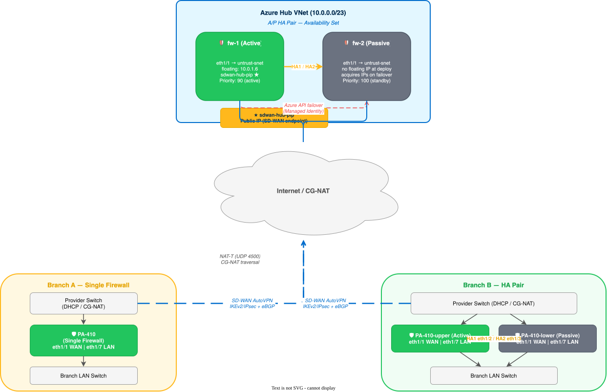
SD-WAN Topology
- Cluster type: Single hub-spoke VPN cluster. The hub is central; all branches connect to the hub. Branch-to-branch traffic routes through the hub.
- Hub: 1 existing HA Active/Passive pair (pre-existing, not provisioned by this guide)
- Branch (new): 1 new HA Active/Passive PA-410 pair behind SNAT/CG-NAT
- Overlay: IKEv2/IPsec tunnels auto-built by AutoVPN from
eth1/1on each branch firewall to each hub firewall WAN interface - Routing: eBGP over the overlay; each site has a unique BGP AS number. AutoVPN auto-configures BGP on the branch when it joins the cluster.
SD-WAN Constructs the AutoVPN Process Creates
When the branch HA pair is added to the VPN cluster and AutoVPN runs, SCM automatically creates the following on the branch firewalls:
| Construct | What it does |
|---|---|
| DIA VIF | SD-WAN virtual interface grouping the WAN physical interfaces. Handles Direct Internet Access path selection and DHCP default gateway abstraction. |
| VPN VIF | SD-WAN virtual interface grouping all IPSec tunnels to the hub. One VPN VIF per central site. Used for path selection across overlay tunnels. |
| IPSec tunnels | One tunnel per branch WAN interface to each hub WAN interface. With 1 WAN interface (eth1/1) at the branch and 2 at the hub, AutoVPN creates 2 tunnels. |
| Loopback (loopback.901) | BGP router-ID interface. AutoVPN creates this in zone-internal. |
| BGP peering | eBGP session over each tunnel to the hub. Branch advertises its LAN prefixes; hub advertises its internal prefixes back. |
Required Security Zones
The SD-WAN AutoVPN process uses these zone names on the branch firewalls. AutoVPN creates any that don't already exist. Only zone-internal and zone-to-hub must match exactly , the AutoVPN plugin keys on these names internally. zone-public and zone-private are user-defined and can use your organization's naming convention:
| Zone name | Type | Applied to | Required name? |
|---|---|---|---|
zone-internal | Layer 3 | Loopback loopback.901 — BGP router-ID | Yes — AutoVPN keys on this name |
zone-to-hub | Layer 3 | VPN VIF and IPSec tunnels to the hub | Yes — AutoVPN keys on this name |
zone-public | Layer 3 | WAN interface (eth1/1) and DIA VIF | No — user-defined, use your naming convention |
zone-private | Layer 3 | LAN interface (eth1/7) | No — user-defined |
Branch Interface Assignments — Single Firewall
| Interface | Connected To | Zone / Role |
|---|---|---|
eth1/1 | Provider switch | zone-public — Internet/WAN (DHCP). SD-WAN-enabled, source for IPSec tunnels to hub. |
management | Provider switch | OOB management (DHCP). SCM connectivity. |
eth1/7 | Branch LAN switch | zone-private — Trust/LAN. Firewall is default gateway for branch LAN. |
No HA crosslinks are required. Failover is handled at the SD-WAN layer: if the single branch firewall fails, the hub SD-WAN policy can route branch traffic through an alternate path or mark the site as unavailable.
The management interface is connected to the provider switch for initial ZTP. This is required because the firewall has zero configuration at factory default and needs direct internet access to reach SCM on first boot. There is no security policy, NAT, or routing configured yet, so it cannot route through the dataplane to get out.
In production, this is not ideal. Once ZTP completes and the firewall has a working configuration, move the management cable to the LAN switch and configure a static default route on the management interface pointing to your internal next-hop. PAN-OS uses a dedicated management routing table, so management traffic exits independently of the dataplane. See Phase 4 for the recommended post-ZTP management port migration.
CG-NAT mitigates the initial risk: because this deployment is behind carrier-grade NAT, the management interface gets a private RFC1918 DHCP address. The carrier blocks all unsolicited inbound connections, so the management port is not directly reachable from the internet during ZTP. This makes the provider-switch placement acceptable for initial setup even though it is not the long-term production posture.
Single firewall physical cabling — interface assignments and LAN/WAN connections:
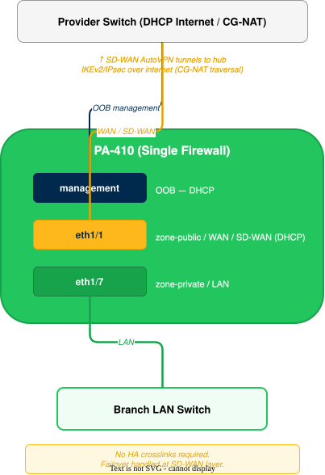
HA Link Model
The PA-410 HA pair uses two dedicated Ethernet crosslinks:
| Link | Interface | Layer | Purpose |
|---|---|---|---|
| HA1 (Control) | eth1/2 | Layer 3 | Heartbeats, HA state, routing management plane, User-ID, config sync. IP subnet: 172.16.254.x/24. |
| HA2 (Data) | eth1/3 | UDP/29281 | Session sync, forwarding tables, IPSec SAs, ARP tables. Flows from active to passive only. Configured as Layer 4 UDP transport (port 29281) over the direct Ethernet crosslink. IP subnet: 172.16.255.x/24. |
Branch Interface Assignments — HA Pair
| Interface | Connected To | Zone / Role |
|---|---|---|
eth1/1 | Provider switch | zone-public — Internet/WAN (DHCP). SD-WAN-enabled, source for IPSec tunnels to hub. |
management | Provider switch | OOB management (DHCP). SCM connectivity — each HA unit maintains its own independent SCM session. |
eth1/2 | Peer firewall eth1/2 | HA1 control link (Layer 3 direct cable, 172.16.254.x/24) |
eth1/3 | Peer firewall eth1/3 | HA2 data link (direct cable, UDP/29281 transport, 172.16.255.x/24) |
eth1/7 | Branch LAN switch | zone-private — Trust/LAN. Active firewall is default gateway for branch LAN. |
Active/Passive HA Behavior
In HA Active/Passive mode, only one firewall is active at a time. The passive firewall has all interfaces inactive except management. When the active firewall fails, the passive assumes the active IP/MAC addresses and sends a gratuitous ARP to update LAN switches. Failover takes under 2 seconds with Passive Link State set to Auto.
SCM communicates with both HA members independently over their dedicated management interfaces. The passive unit maintains its own SCM connection regardless of which unit is active on the dataplane. This is why Phase 4 moves service routes from the ZTP dataplane path (eth1/1 via loopback.900) to the management interface before HA is formed.
Both HA management interfaces are connected to the provider switch for initial ZTP. This is required: at factory default the firewall has no configuration and needs direct internet access to reach SCM on first boot. There is no dataplane security policy or NAT available yet to route management traffic through the LAN side.
In production, the management interfaces should be on the LAN switch on a dedicated management VLAN. Move the cables post-ZTP and configure a static default route on the management interface pointing to your internal next-hop. Because PAN-OS uses a separate management routing table, traffic exits the management interface independently of the firewall dataplane, so it can reach the internet through the LAN infrastructure without going through a security policy. See Phase 4 for the post-ZTP management migration steps.
CG-NAT mitigates the initial risk: the carrier-grade NAT blocks all unsolicited inbound connections, so management interfaces on the provider switch are not directly internet-reachable during ZTP. This makes the provider-switch placement acceptable for initial setup.
Branch HA physical cabling — interface assignments, crosslinks, and LAN/WAN connections:
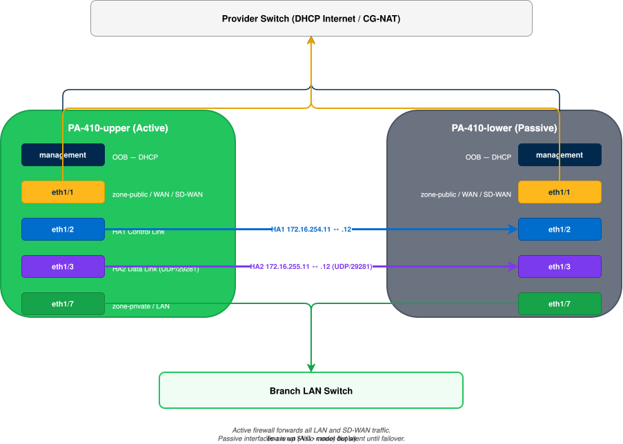
Azure Hub: VNet Layout and Floating IP Model
The hub is deployed in Azure as two VM-Series instances in an Availability Set. The VNet is 10.0.0.0/23 with four subnets. Unlike the branch (which uses DHCP and CG-NAT), the hub has static private IPs and Azure Public IPs assigned directly to the untrust NIC.
| Subnet | CIDR | Purpose |
|---|---|---|
mgmt-snet | 10.0.0.0/28 | OOB management. Each VM gets a dedicated public IP for direct admin access. |
untrust-snet | 10.0.1.0/28 | WAN/internet-facing (eth1/1). Holds the floating SD-WAN endpoint IP. |
trust-snet | 10.0.1.16/28 | LAN/spoke-facing (eth1/2). Floating IP is the default gateway for spoke VNets. |
ha-snet | 10.0.1.32/28 | HA1 control link (eth1/3). L3 crosslink, direct between the two VMs. |
Floating IP model: Two secondary private IPs float between VMs on failover:
| Floating IP | Location | Purpose | Has Public IP? |
|---|---|---|---|
10.0.1.6 | untrust NIC | SD-WAN hub WAN endpoint. Branch firewalls use the attached Public IP (sdwan-hub-pip) as their hub peer address. | Yes — sdwan-hub-pip |
10.0.1.22 | trust NIC | Default gateway for spoke VNets and LAN traffic. Azure Route Table on trust-snet points 0.0.0.0/0 here. | No |
Azure hub VNet layout , four subnets, floating IPs, Managed Identity failover:
![Azure hub VNet layout showing resource group containing VNet 10.0.0.0/23 with four subnets: mgmt-snet (10.0.0.0/28) with fw-1-mgmt 10.0.0.4 and fw-2-mgmt 10.0.0.5 each with public IPs; untrust-snet (10.0.1.0/28) with floating IP 10.0.1.6 and sdwan-hub-pip public IP on fw-1, NSG allowing UDP 500/4500; trust-snet (10.0.1.16/28) with floating 10.0.1.22 as LAN gateway; ha-snet (10.0.1.32/28) with HA1 crosslink between fw-1 10.0.1.36 and fw-2 10.0.1.37. Both VMs in Availability Set with SystemAssigned Managed Identity.](diagrams/azure-hub-vnet-layout.svg)
Hub HA: Azure API-Based Failover
Azure's software-defined networking does not support gratuitous ARP between VMs. Hub HA failover works differently from the branch:
- fw-2 detects fw-1 failure (heartbeat loss on HA1, link monitor, or path monitor).
- fw-2 calls the Azure REST API using its SystemAssigned Managed Identity (granted Network Contributor on the resource group by Terraform).
- The API call moves the floating private IPs (
10.0.1.6and10.0.1.22) from fw-1's NICs to fw-2's NICs. The Public IPsdwan-hub-pipfollows the floating private IP automatically. - Branch SD-WAN tunnels re-establish to the same public IP address on fw-2.
Azure API calls take 15 to 60 seconds to complete, compared to sub-second failover for on-premises hardware HA using gratuitous ARP. Plan SD-WAN path-quality profile thresholds accordingly , branch firewalls will briefly lose the hub tunnel during failover and will re-establish on the same Public IP once the API call completes.
Hub SD-WAN Security Zones
Hub zones differ from branch zones. AutoVPN creates these on the hub if they don't already exist:
| Zone name | Applied to | Notes |
|---|---|---|
zone-internal | Loopback (loopback.901) — BGP router-ID | Must match exactly. |
zone-to-branch | VPN VIF and IPSec tunnels to branch sites | Must match exactly. Hub uses zone-to-branch; branch uses zone-to-hub. |
zone-public | Untrust NIC (eth1/1) and DIA VIF | Can choose name, but must be consistent in security policies. |
zone-private | Trust NIC (eth1/2) — spoke/LAN side | Can choose name. |
Phase 1: Prerequisites
Verify all of the following before beginning. Steps 2 and 3 must be complete before the firewalls are powered on.
| Item | Requirement | Notes |
|---|---|---|
| Firewall | 1x PA-410 | PAN-OS 11.2.10-h4 or later. Not supported if Enterprise DLP license is active. |
| Internet connectivity | DHCP Ethernet | Provider switch provides DHCP on 2 ports (management + eth1/1). Both must reach the internet on boot. |
| LAN switch | Any managed switch | Connected to eth1/7 for LAN zone. |
| Claim code | Physical device label | Located on the back or bottom of the PA-410 chassis. Collect before racking. |
| Item | Requirement | Notes |
|---|---|---|
| Firewalls | 2x PA-410 | PAN-OS 11.2.10-h4 or later. Both units must run the same PAN-OS version — HA will not form between mismatched versions. Not supported if Enterprise DLP license is active — if Enterprise DLP is active on your tenant, contact your Palo Alto Networks account team before proceeding as it is incompatible with the ZTP cloud-management flow. |
| Internet connectivity | DHCP Ethernet | Provider switch must provide DHCP on all 4 WAN ports (2 per firewall). Both management and eth1/1 on each unit must reach the internet on boot. |
| HA crosslinks | 2x direct Ethernet cables | PA-410-upper eth1/2 ↔ PA-410-lower eth1/2 (HA1 control); PA-410-upper eth1/3 ↔ PA-410-lower eth1/3 (HA2 data). |
| LAN switch | Any managed switch | Connected to both eth1/7 ports. Active firewall handles traffic; passive stays standby with links up. |
| Claim codes | Physical device labels (x2) | Located on the back or bottom of each PA-410 chassis. Collect from both units before racking. |
All cables are connected per the interface table in Architecture Overview. PA-410 unit(s) are powered off and at factory state (or private-data-reset state). Claim codes and serial numbers are recorded.
| Requirement | Details |
|---|---|
| SCM license | Strata Cloud Manager Essentials, SCM Pro, or AIOps for NGFW Premium. At least one must be active on the tenant. |
| Strata Logging Service | Required. SCM cloud management will not complete without an active SLS license on the tenant. |
| SD-WAN subscription | Active SD-WAN subscription on both PA-410 branch firewalls and on the hub firewalls. SD-WAN features (VIFs, AutoVPN, path quality profiles) are unavailable without this subscription. Verify in the CSP that SD-WAN auth codes are activated on all devices in the VPN cluster. |
| CSP account | Active Palo Alto Networks Customer Support Portal account at support.paloaltonetworks.com. Both PA-410 units must be registered here with auth codes activated. |
| SCM role | Account Administrator or App Administrator on the SCM tenant. |
| ZTP access | Access to the ZTP portal at stratacloudmanager.paloaltonetworks.com/ztpdeviceactivation. |
| BGP planning | Each SD-WAN site requires a unique BGP AS number and a loopback IP address (used as the BGP router-ID). Plan these before Phase 6: the branch site needs 1 unique private AS number (example: 65101) and 1 loopback IP (example: 10.255.101.1/32). The hub AS and loopback must already be configured. |
Log in to SCM at stratacloudmanager.paloaltonetworks.com. Confirm the tenant is active and you have administrator access. Both PA-410 serial numbers appear in the CSP device inventory.
The provider switch (DHCP internet) must allow outbound connectivity from both firewalls on the following ports and FQDNs. These are required for ZTP to succeed and for SCM ongoing management.
| Service | FQDN | TCP Port |
|---|---|---|
| SCM connectivity (Virtus) | *.us.ngfw.cloudmgmt.paloaltonetworks.com (substitute your region) | 3978, 443 |
| SCM discovery | ds-cloudmgmt.paloaltonetworks.com | 443 |
| Strata Logging Service | SLS regional FQDNs | 444, 3978 |
| Device certificates (OCSP) | ocsp.paloaltonetworks.com, ocsp.godaddy.com | 80 |
| Certificate APIs | api.paloaltonetworks.com, certificate.paloaltonetworks.com | 443 |
The branch is behind SNAT/CG-NAT , outbound-initiated connections from the firewalls work normally. The SD-WAN AutoVPN tunnel uses NAT traversal (NAT-T) for IKEv2, so no inbound port forwarding is required.
From a laptop on the provider switch network, confirm outbound HTTPS (port 443) and port 3978 are not blocked to internet destinations. No firewall rules or proxy should inspect or block these connections.
All of the following must be true before proceeding to Phase 2:
Branch hardware & accounts
- Both PA-410 serial numbers recorded
- Both PA-410 ZTP claim codes recorded (from physical device labels)
- CSP account active, both devices registered and licensed
- SCM tenant active with SCM Essentials/Pro or AIOps Premium license
- Strata Logging Service license active on tenant
- SCM administrator access confirmed
- SD-WAN subscription activated on both PA-410s and on hub firewalls (CSP)
- Outbound internet (port 3978 and 443) confirmed available from provider switch
- Physical cabling complete per interface table (firewalls still powered off)
- Both PA-410s running same PAN-OS version (HA requirement — mismatched versions prevent HA formation)
- Branch BGP AS number chosen (unique, private — e.g. 65101)
- Branch BGP router-ID / loopback IP chosen (e.g. 10.255.101.1/32)
- Branch LAN prefix documented (the subnet AutoVPN will advertise via eBGP to hub)
Azure hub (Step 1.5 explains each item in detail)
- Existing SD-WAN VPN cluster operational (hub side is healthy) or Phase 1B will be completed before Phase 6
- Azure subscription with Owner or Contributor + User Access Administrator role
- Terraform >= 1.5 installed locally
- Azure CLI installed and authenticated (
az login) - VM-Series Marketplace terms accepted (one-time per subscription — see Step 1.5)
- Hub BGP AS number chosen (unique, different from branch AS — e.g.,
65100) - Hub BGP router-ID / loopback IP chosen (e.g.,
10.255.100.1/32) - Hub LAN/spoke prefix documented (the CIDR AutoVPN will advertise from the hub to branches)
All checklist items checked. Do not power on the branch firewalls until Phase 3 is initiated. Complete Phase 1B (Azure Hub deployment) before Phase 2 , the hub must be in the VPN cluster before branch onboarding rules reference it.
The Azure hub is deployed via Terraform using the vmseries_standalone-HA example. Verify the following before running the Terraform deployment in Phase 1B.
| Requirement | Details |
|---|---|
| Azure subscription role | Owner, or Contributor + User Access Administrator. The Terraform creates azurerm_role_assignment resources (Network Contributor for each VM's Managed Identity) — this requires the User Access Administrator permission. Contributor alone is insufficient. |
| Terraform | Version >= 1.5. Install from developer.hashicorp.com/terraform/downloads or via brew install terraform. |
| Azure CLI | Authenticated via az login or via environment variables ARM_SUBSCRIPTION_ID, ARM_CLIENT_ID, ARM_CLIENT_SECRET, ARM_TENANT_ID. |
| Marketplace image | Accept VM-Series BYOL terms once per subscription:
|
| VM-Series size | Standard_DS3_v2 minimum — 4 vCPUs, 14 GB RAM, supports 4 NICs (required for mgmt / untrust / trust / ha layout). Set in vmseries_universal.size in example.tfvars. |
| PAN-OS version | 11.2.3 (set in vmseries_universal.version). Both hub VMs must run the same version — required for HA formation. |
Run az account show and confirm the subscription is correct. Run terraform version and confirm >= 1.5. Marketplace terms acceptance returns no error.
Phase 1B: Deploy Azure Hub (VM-Series A/P HA)
Deploy the Azure hub infrastructure using the vmseries_standalone-HA Terraform example. This creates two VM-Series instances in an Availability Set with Managed Identity-based HA failover, the four-subnet VNet, NSGs, route tables, and floating IPs.
Phases 2, 3, 4, and 5 are branch-side operations that can proceed in parallel with the hub deployment. The hub only needs to be fully deployed and added to the VPN cluster (Steps 1B.3 through 1B.5) before Phase 6 , not before Phase 2. If Azure access is delayed, complete the branch SCM setup (Phase 2) and ZTP (Phase 3) independently and return to this phase when ready.
The hub Terraform example uses local module references (../../modules/vnet, ../../modules/vmseries, etc.) and must run from inside the official PAN SWFW modules repository. Clone the repo first, then place the customer tfvars file inside the example directory.
1. Clone the repository
git clone https://github.com/PaloAltoNetworks/terraform-azurerm-swfw-modules.git
cd terraform-azurerm-swfw-modules2. Download and place the customer tfvars
Download the pre-configured customer tfvars file and copy it into the example directory:
# After downloading hub-deploy.tfvars, copy it into the example directory
cp ~/Downloads/hub-deploy.tfvars examples/vmseries_standalone-HA/hub-deploy.tfvars3. Fill in the customer placeholders
Open hub-deploy.tfvars in any text editor. Every value to change is marked with a CUSTOMER_ prefix , use find-and-replace to set all instances at once.
Every placeholder follows the CUSTOMER_XXXX naming convention , a single find-and-replace in your editor sets all instances at once.
| Placeholder | What to set |
|---|---|
CUSTOMER_ADMIN_IP | Your public IP in CIDR notation (e.g. 203.0.113.5/32). Controls SSH/HTTPS access to hub management interfaces. |
CUSTOMER_REGION | Azure region closest to your branch sites (e.g. East US 2, West Europe). |
CUSTOMER_RG_NAME | Azure resource group name to create (e.g. vmseries-hub-prod). |
CUSTOMER_PREFIX | Short prefix prepended to every Azure resource name (e.g. acme-). Include the trailing dash. |
CUSTOMER_FW1_HOSTNAME | Hostname for hub firewall 1 (e.g. hub-fw1). |
CUSTOMER_FW2_HOSTNAME | Hostname for hub firewall 2 (e.g. hub-fw2). |
CUSTOMER_SCM_LABEL | SCM device label name (tplname) — the label assigned in the SCM hub folder. |
CUSTOMER_SCM_FOLDER | SCM folder name (dgname) — the hub Azure folder created in SCM (e.g. hub-azure). |
CUSTOMER_PIN_ID | VM-Series auto-registration PIN ID — see note below. |
CUSTOMER_PIN_VALUE | VM-Series auto-registration PIN value — see note below. |
CUSTOMER_AUTHCODE | BYOL license auth code. Leave as empty string "" for PAYG/credit-funded deployments. |
Log in to support.paloaltonetworks.com > Assets > Device Certificates > Generate VM-Series Auto-Registration PIN. Generate these immediately before running terraform apply , they are single-use and expire. Without them, panorama-server = "cloud" will not authenticate and the hub VMs will not connect to SCM.
Use a dedicated hub folder (e.g. hub-azure) separate from the branch folder (e.g. 410-ha). Hub and branch should not share an SCM folder.
All CUSTOMER_ placeholders are replaced. panorama-server = "cloud" is present in both fw-1 and fw-2 bootstrap blocks. PIN ID and value are generated and pasted in. Save the file before proceeding.
Run the Terraform deployment from inside the vmseries_standalone-HA example directory. Use the customer tfvars file placed in Step 1B.1.
# From the repo root cloned in Step 1B.1:
cd examples/vmseries_standalone-HA
# Accept the VM-Series Marketplace image terms (one-time per subscription)
az vm image terms accept \
--publisher paloaltonetworks \
--offer vmseries-flex \
--plan byol
# Initialize providers and modules
terraform init
# Preview — review all resources before creating anything
terraform plan -var-file=hub-deploy.tfvars
# Deploy (typically 8–12 minutes)
terraform apply -var-file=hub-deploy.tfvarsThe apply creates approximately 30 Azure resources. Typical deployment time is 8 to 12 minutes. Key resources:
- Resource Group, VNet, 4 subnets, 3 NSGs, 1 Route Table
- Availability Set
- 2 VM-Series instances (fw-1, fw-2) with 4 NICs each
- 3 Public IPs:
fw-1-mgmt,fw-2-mgmt,sdwan-hub-pip(floating SD-WAN endpoint) - 2 Managed Identities + 2 Network Contributor role assignments
terraform apply -var-file=hub-deploy.tfvars completes with 0 errors. Note the output values , you will need them in later steps:
vmseries_mgmt_ips.fw-1andvmseries_mgmt_ips.fw-2— management public IPs for direct SSH/HTTPS accessha_floating_untrust_ip— the floating private IP (10.0.1.6); its Public IP (sdwan-hub-pip) is the SD-WAN hub WAN endpoint that branch firewalls will use
Both hub VMs bootstrap via the SCM options set in example.tfvars. After the VMs boot (3 to 5 minutes after Terraform completes), they should appear in SCM as cloud-managed devices.
- Log in to SCM at stratacloudmanager.paloaltonetworks.com.
- Navigate to Settings > Device Management > Cloud Managed Devices.
- Confirm both
vmseries-fw-1andvmseries-fw-2appear, show their model (PA-VM), and display their management IP addresses. - Confirm both are in the hub SCM folder (e.g.,
hub-azure).
SCM pushes a configuration enabling the Advanced Routing Engine on first contact. This causes an automatic reboot. Both VMs will briefly disconnect from SCM and reconnect. Wait for both to show Connected before proceeding.
Both hub VMs show Connected in SCM Device Management and are assigned to the hub folder. Config sync status shows In Sync (after the initial push completes).
Use the SCM HA wizard to pair the two hub VMs. The process is identical to the branch HA configuration (Phase 5) with different interface assignments. Hub HA interfaces are eth1/3 (HA1) with the management NIC as the HA1 backup.
- In SCM, navigate to Configuration > NGFW and Prisma Access.
- Set the scope to the hub Azure folder.
- Click the HA Setup gear.
- Select
vmseries-fw-1as the primary (active) device. - Select
vmseries-fw-2as the secondary (passive) device. - Set HA1 to
ethernet1/3(ha-snet NIC). Peer IPs: fw-1 =10.0.1.36, fw-2 =10.0.1.37. - Set HA1 Backup to the management interface (provides HA1 redundancy if the ha-snet link fails).
- Set HA2 to
ethernet1/3(same interface, different IP — HA2 uses the same ha-snet subnet). - Set Device Priority: fw-1 =
90, fw-2 =100. Lower number = higher priority = preferred active device in PAN-OS HA. fw-1 (90) will be the preferred active unit. - Leave Preemptive disabled — recommended for Azure to avoid unnecessary failover when fw-1 recovers.
- Push configuration to both hub VMs.
After the SCM HA push, configure the Azure-specific HA settings on each VM via Device > High Availability > Active/Passive Settings > Azure. Set the Azure Tenant ID, Subscription ID, and Resource Group. Leave Client ID blank , the VM uses its Managed Identity automatically. This configuration cannot currently be pushed from SCM and must be set locally on each VM or via bootstrap XML.
From the CLI on fw-1: show ha state shows active. From the CLI on fw-2: show ha state shows passive. Both show peer state as connected. HA sync status shows configuration synchronized.
show ha state
show ha allAdd both hub VMs to the SD-WAN plugin before adding the branch. Both VMs in an A/P HA pair are added individually with the same site settings , crucially, both use the same site name. The SD-WAN plugin treats them as a single logical hub site.
In Azure, PAN-OS on the VM sees only the private IP on eth1/1 , Azure NATs the associated Public IP at the hypervisor level. The SD-WAN plugin needs to know the actual public IP (sdwan-hub-pip) so it can tell branch firewalls where to build tunnels. Enable Upstream NAT on the hub gateway settings, set NAT Type to IP Address, and set the IP Address field to the floating Public IP (sdwan-hub-pip) from the Terraform output.
- In SCM, navigate to VPN Clusters (under SD-WAN / Prisma SD-WAN).
- Create a new VPN cluster (e.g., name
VPNC1) with SD-WAN enabled. - On the Hub devices tab, click Add Hub devices.
- Select
vmseries-fw-1and configure Gateway Settings:- Site Name:
hub1 - Priority:
1 - Router:
default - BGP Redistribution Profile:
All-Connected-Routes - DIA VPN: Disabled (hub has direct internet access — DIA VPN failover not needed)
- Interface 1 — Ethernet Interface:
$eth-internet - Interface 1 — Next Hop Gateway:
$internet-dgw(Azure subnet gateway, e.g., 10.0.1.1) - Interface 1 — SD-WAN Interface Profile: select or create an Ethernet public profile
- Interface 1 — Upstream NAT: Enable
- Interface 1 — NAT Type: IP Address
- Interface 1 — IP Address: set to the
sdwan-hub-pipPublic IP from Terraform output (the floating IP, e.g.,$internet-pub-ipvariable)
- Site Name:
- Save, then repeat for
vmseries-fw-2using identical settings:- Site Name:
hub1— same name as fw-1, not a-2suffix - Same Priority (
1), same BGP profile, same Upstream NAT settings
- Site Name:
VPN Clusters screen showing both hub VMs with site name hub1, priority 1, DIA VPN disabled:
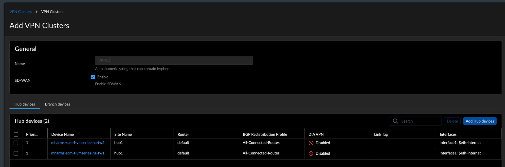
Gateway Settings detail for fw-1 , note Upstream NAT enabled with IP Address type:
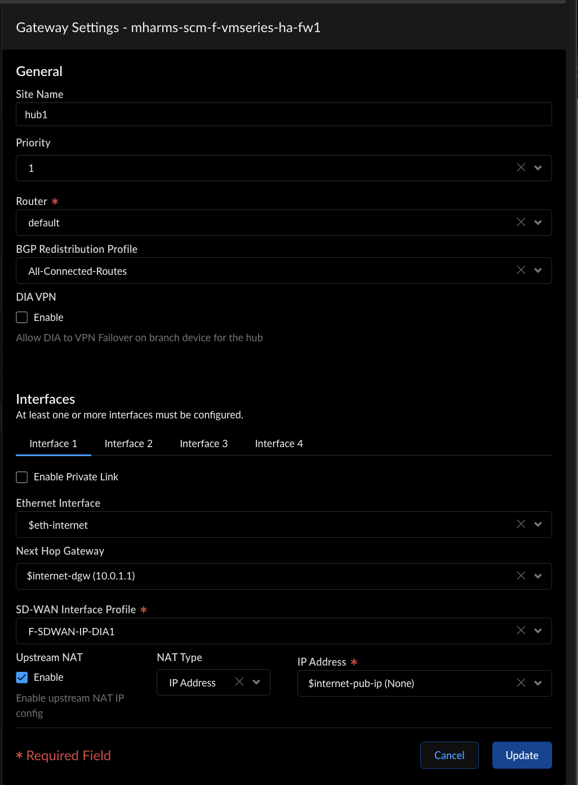
For an Active/Passive HA hub pair, both VMs use the same site name (e.g., hub1). The SD-WAN plugin generates tunnel configuration targeting only the active VM's public IP. When failover occurs, the floating Public IP moves to fw-2 and branch tunnels re-establish to the same address automatically. The -2 suffix convention applies to dual-standalone hub models, not A/P HA pairs.
Both hub VMs appear in the VPN cluster Hub devices tab with site name hub1, priority 1, DIA VPN disabled, Upstream NAT enabled. The VPN cluster is created and contains both hub entries. No branch devices are in the cluster yet.
The hub requires security policies to permit control-plane (BGP) and data-plane (branch-to-hub) traffic. These are configured in the hub SCM folder and pushed to both hub VMs.
| Policy | Source zone | Destination zone | Application | Action |
|---|---|---|---|---|
| BGP from branches | zone-to-branch | zone-internal | bgp | Allow |
| BGP to branches | zone-internal | zone-to-branch | bgp | Allow |
| Branch to hub LAN | zone-to-branch | zone-private | any (or specific) | Allow |
| Hub LAN to branch | zone-private | zone-to-branch | any (or specific) | Allow |
On the hub, the SD-WAN tunnel zone is zone-to-branch. On the branch, the equivalent zone is zone-to-hub. These names are required by AutoVPN and must match exactly in your security policies.
Push hub security policies to both hub VMs. Push succeeds. The hub is ready to receive branch SD-WAN tunnel connections once the branch firewalls are onboarded and added to the VPN cluster in Phase 6.
Phase 2: SCM Pre-Configuration
All SCM-side configuration is staged before the firewalls boot. When ZTP completes, the firewalls self-assign to the correct folder, receive the ZTP snippet, and establish management connectivity , without any local console interaction.
SCM uses folders to group firewalls for configuration management. Both HA firewalls must be in the same folder before HA is configured. Plan your folder hierarchy before proceeding.
The folder path used in this deployment is:
All Firewalls → ztp → 410-ha- ztp — parent folder that holds the ZTP snippet (inherited by all child folders). This allows multiple HA branch folders to inherit the same ZTP baseline.
- 410-ha — the branch HA pair folder. Both PA-410 units land here via the onboarding rule. The HA wizard in Phase 5 runs at this folder scope.
Once HA is configured, SCM will not allow either firewall to be moved to a different folder. To move them you must first break the HA pair, move both firewalls individually, then reconfigure HA. Plan the folder structure before ZTP boots the devices.
The ztp parent folder and 410-ha child folder both exist in Settings > Folder Management. The hub folder is in a separate branch of the hierarchy and is not modified by this guide.
ZTP uses device labels to match firewalls to onboarding rules and to pair them into HA groups during ZTP registration. This deployment uses two distinct label group types , create both before proceeding.
Label group 1: region (geographic assignment)
The region label group classifies devices by physical location. Region labels are assigned in the ZTP portal at claim time to identify which geographic site a device belongs to , they are informational and available for optional use in onboarding rule match criteria, but the onboarding rule in Step 2.4 matches on the HA-Group label only.
- Navigate to Configuration > NGFW and Prisma Access > Setup > Device Onboarding > Device Labels > Manage Label Group.
- Click Add Label Group. Name it
region. Enable exposure for ZTP. - Save, then create individual labels within this group for each region (e.g.,
west,east,central).
Label group 2: HA-Group (HA pair assignment)
The HA-Group label group pairs two PA-410 devices into an HA unit during ZTP registration. When you register both devices in the ZTP portal, you assign them to the same HA-Group label (e.g., fw-pair-01). SCM uses this to associate the two devices as an HA pair without requiring console access.
- Click Add Label Group. Name it
HA-Group. Enable exposure for ZTP. - Save, then create a label for each branch HA pair (e.g.,
fw-pair-01,fw-pair-02).
Your screen should look like this , two label groups (region and HA-Group) with their labels:
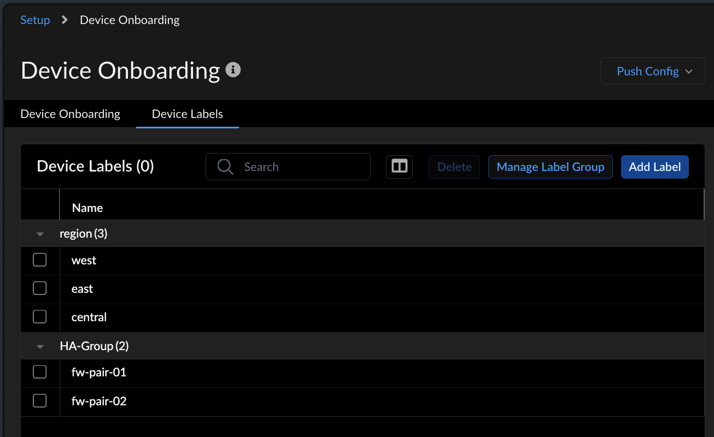
When you register each PA-410 in the ZTP portal (Step 3.3), you will see both a region dropdown and an optional HA-Group dropdown. Assigning both devices in a pair to the same HA-Group label (e.g., fw-pair-01) is how SCM knows to pair them for HA , without any local console configuration.
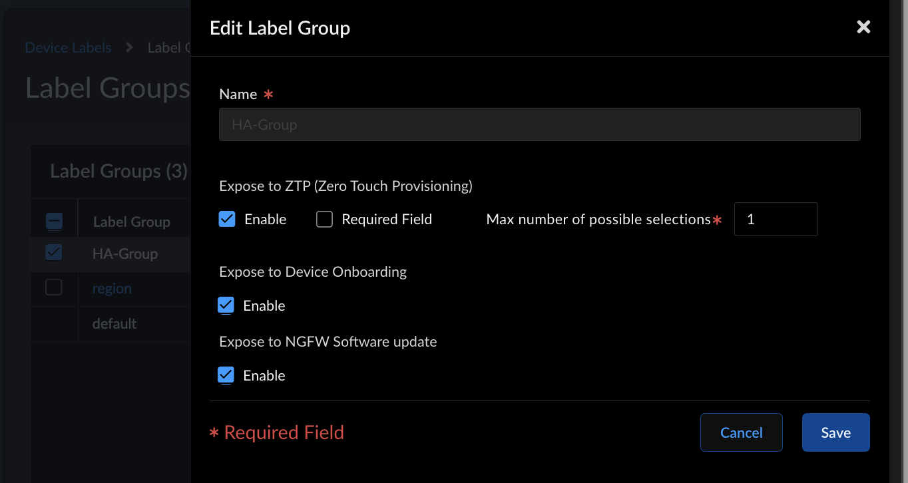
Both label groups (region and HA-Group) appear in Device Labels, each with ZTP exposure enabled. At least one region label and one HA-Group label exist for this branch pair.
A snippet is a reusable configuration block SCM pushes to a firewall when it first connects. The ZTP snippet provides DHCP management interface configuration and service routes via loopback.900, keeping the firewall reachable over its dataplane WAN until the management interface is configured in Phase 4.
Create the snippet
- In SCM, navigate to Configuration > NGFW and Prisma Access > Setup.
- Set the configuration scope to the ztp folder. The scope selector is the folder dropdown in the top-left of the Configuration area — click it and select ztp from the folder hierarchy. The selected scope controls which folder's configuration you are editing. Subsequent steps will ask you to "set the scope to X" — this is always the same control.
- Click Snippets in the left navigation.
- Click Add Snippet. Name it
ZTP-Default. - In the snippet editor, configure service routes for the following services, each pointing to the
loopback.900interface (via Device > Setup > Services > Service Route Configuration):dnsntppaloalto-networks-servicespanorama(SCM connectivity)scepztpdeployments
- Also configure the management interface as DHCP Client within the snippet (Device > Setup > Interfaces > Management > set IP Address Type to DHCP Client).
- Click Save.
During ZTP, the firewall reaches the internet via eth1/1 (WAN) before the management interface is configured. The loopback.900 construct routes service traffic through that dataplane path. Phase 4 replaces it with management interface service routes.
Associate the snippet with the ztp folder
- Navigate to Settings > Folder Management.
- Click the ztp folder > Edit.
- Under Snippet Association, add
ZTP-Default. - Click Save. The
410-hachild folder inherits the snippet automatically.
Folder variables
The 410-ha folder uses SCM variables to abstract device-specific values (HA link IPs, interface assignments) so both firewalls in the pair share the same configuration template. The following variables are configured at the folder scope:
| Variable | Type | Value | Used in |
|---|---|---|---|
$ha1-pri-ip | ip-netmask | 172.16.254.11 | HA1 primary device IP |
$ha1-sec-ip | ip-netmask | 172.16.254.12 | HA1 secondary device IP |
$ha1-mask | ip-netmask | 255.255.255.0 | HA1 subnet mask |
$ha2-pri-ip | ip-netmask | 172.16.255.11 | HA2 primary device IP |
$ha2-sec-ip | ip-netmask | 172.16.255.12 | HA2 secondary device IP |
$ha2-mask | ip-netmask | 255.255.255.0 | HA2 subnet mask |
$local-ip-mask | ip-netmask | Replace with your branch LAN gateway IP (e.g. 10.10.1.1/24). The value shown (10.255.255.1/24) is from the reference deployment — using it as-is will assign the wrong gateway to the LAN interface and advertise the wrong prefix to the hub via eBGP. | LAN interface ($eth-local) |
$ztp-loopback-addr | ip-netmask | 100.64.0.200/32 | ZTP loopback address ($ztp-loopback) |
$eth-internet | Layer 3 | ethernet1/1 | Internet/WAN interface assignment |
$eth-local | Layer 3 | ethernet1/7 | LAN interface assignment |
$ztp-loopback | Loopback | loopback.900 | ZTP service route loopback |
Your screen should look like this , Manage Variables for the 410-ha folder:
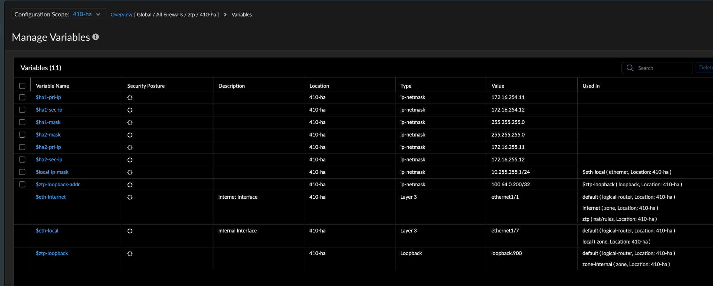
The ZTP snippet exists in SCM and is associated with the ztp folder (inherited by 410-ha). The 410-ha folder shows all required variables populated, including $eth-internet, $eth-local, $ztp-loopback, and all four HA IP variables.
The onboarding rule tells SCM what to do when a new firewall connects for the first time. The rule matches on the HA-Group label assigned during ZTP portal registration and automatically places the firewall in the 410-ha folder with the ZTP snippet applied.
- Navigate to Configuration > NGFW and Prisma Access > Setup > Device Onboarding.
- Click Add Rule.
- Enter a name (for example:
Branch-PA-410). - Under Match Criteria:
- Set Models to Any (or Match PA-410 specifically).
- Set Device S/N to Any.
- Set Labels to match the HA-Group label for this pair (e.g.,
fw-pair-01).
- Under Action:
- Set Target Folder to
410-ha. - Under Snippet Association, select
ZTP-Default(the ZTP snippet created in Step 2.3).
- Set Target Folder to
- Click Save. Confirm the rule is Enabled.
Your screen should look like this , the rule matches on HA-Group label fw-pair-01 and targets folder 410-ha with snippet ZTP-Default:
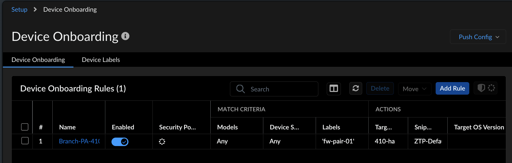
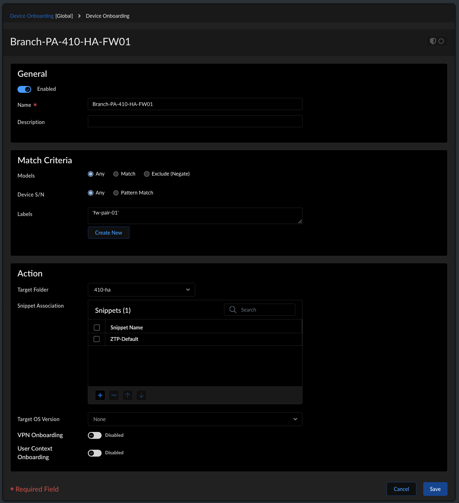
The onboarding rule Branch-PA-410 appears in Device Onboarding with status Enabled. Match criteria shows the fw-pair-01 HA-Group label. Action shows folder 410-ha and snippet ZTP-Default.
Phase 3: Initiate ZTP
Execute these steps in strict order. The ZTP portal registration must exist before the firewalls are powered on. The flowchart below shows the complete ZTP sequence including what happens automatically on the device and what SCM does in response.
ZTP process flow , from device boot through Bootstrap Done:
![ZTP process flowchart with three swim lanes (PA-410 device, ZTP Portal/Internet, Strata Cloud Manager). Flow: pre-boot SCM setup → device powers on → DHCP on management and eth1/1 → contacts ZTP portal → validates serial and claim key → installs device certificate → connects to SCM on TCP 3978 → onboarding rule fires placing device in 410-ha folder with ZTP-Default snippet → SCM pushes first config enabling Advanced Routing Engine (Auto Reboot 1) → device reconnects → SCM pushes full config (Auto Reboot 2 if needed) → Bootstrap Done state with device Connected and Config Out of Sync → Phase 4.](diagrams/ztp-process-flow.svg)
Gather the serial number and claim code from the physical label on each PA-410. The claim code is a numeric code printed on the device label , used once during ZTP portal registration.
| Role | Model | Serial Number | Claim Code |
|---|---|---|---|
| Branch firewall | PA-410 | <upper-serial> | <upper-claim-key> |
| Role | Model | Serial Number | Claim Code |
|---|---|---|---|
| PA-410-upper (Primary) | PA-410 | <upper-serial> | <upper-claim-key> |
| PA-410-lower (Secondary) | PA-410 | <lower-serial> | <lower-claim-key> |
Serial number(s) match the physical label(s). Claim code(s) recorded. Claim codes cannot be retrieved from SCM after registration , confirm before proceeding.
If either PA-410 has been through a ZTP process before or has an existing SCM association, complete all three sub-steps below. Skip this step entirely for factory-fresh devices.
3.2a — Clean up VPN cluster
If the devices are already in an SD-WAN cluster, remove them and push the configuration before resetting:
- In SCM, navigate to the SD-WAN VPN cluster and remove the branch HA pair.
- Push the configuration change to the hub.
3.2b — CLI private data reset
Run the following command on each firewall from the CLI. This wipes all local configuration and certificates, returning the device to a clean state. The firewall will reboot and the SCM connection will drop.
request system private-data-resetA private data reset erases all local configuration, certificates, and logs. Run this only when you intend to fully re-provision the device via ZTP.
Your screen should look like this:
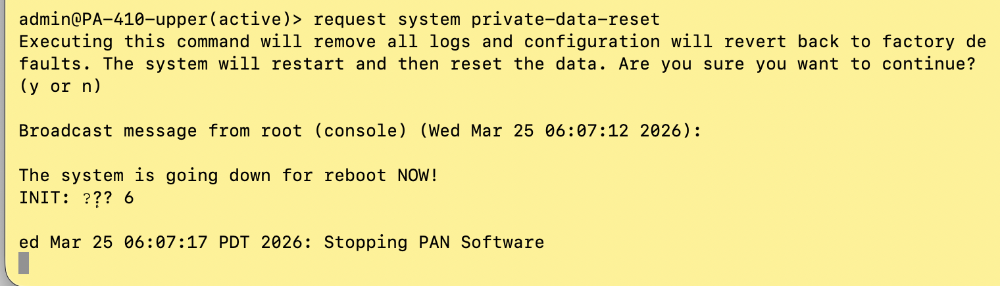
3.2c — Remove from SCM tenant service group (TSG)
In SCM, ensure the devices are unassigned from the TSG so they can be claimed fresh:
- Navigate to Settings > Device Management.
- Locate each serial number and move it back to Available Devices (or remove the device association).
Your screen should look like this:
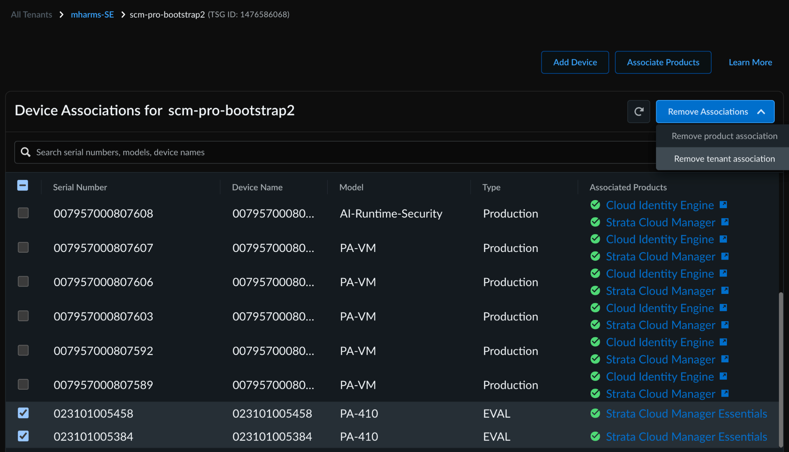
Both firewalls have rebooted after the private data reset and are powered off or at the login prompt. Neither serial number appears as a cloud-managed device in SCM.
Register branch PA-410 unit(s) in the ZTP device activation portal.
- Open the ZTP portal: stratacloudmanager.paloaltonetworks.com/ztpdeviceactivation
- Fill in the form:
- Tenant — select your SCM tenant.
- Serial Number — enter
<your-serial-number>. - Claim Key — enter
<your-claim-key>. - region — select the region label for this branch (e.g.,
central). - HA-Group — leave empty (optional field, not used for single firewall).
- Click Activate.
- Open the ZTP portal: stratacloudmanager.paloaltonetworks.com/ztpdeviceactivation
- For the first PA-410 (upper unit — primary):
- Tenant — select your SCM tenant.
- Serial Number —
<upper-serial>, Claim Key —<upper-claim-key>. - region — e.g.,
central. - HA-Group — select
fw-pair-01.
- Click Activate. Repeat for the second PA-410 (lower unit): serial
<lower-serial>, claim key<lower-claim-key>, same region, same HA-Groupfw-pair-01.
This is how SCM identifies which two devices form an HA pair without local console access. Different HA-Group labels result in two standalone firewalls , the Phase 5 wizard will not pair them.
Your screen should look like this , note the region and HA-Group fields:
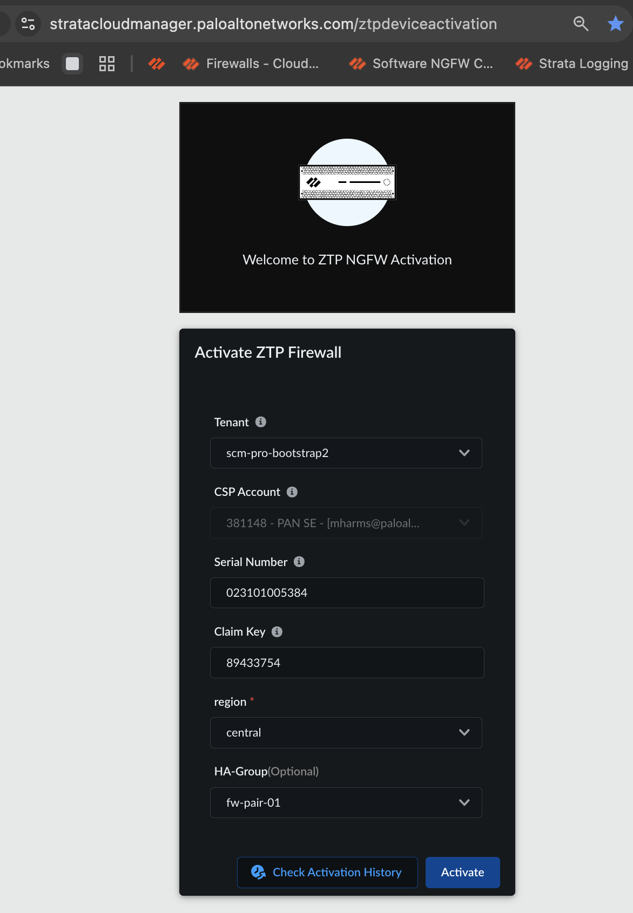
Both serial numbers have been activated in the ZTP portal with the same region label and the same HA-Group label (fw-pair-01). Power on the firewalls only after both registrations are confirmed , ZTP registration must exist before the devices first reach the internet.
Power on both PA-410 units. They will boot, acquire DHCP addresses on eth1/1 and management, reach the ZTP portal, claim themselves, and begin the onboarding sequence automatically.
ZTP triggers two automatic reboots:
- First reboot: after the Advanced Routing Engine is enabled (required for SCM management)
- Second boot: full configuration push from SCM
Monitor via console (optional)
Console access is not required but is useful for visibility. Log in with admin / admin and set a local password , this does not interrupt ZTP.
Run these commands in sequence to track progress:
show system info | match "uptime|cert|zero|routing|serial"Run just before the advanced routing reboot , your screen should look like this:
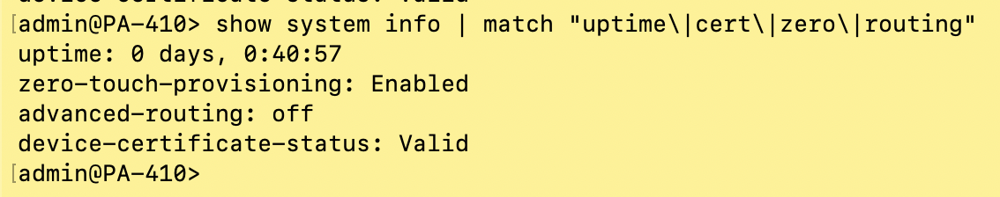
show system ztp statusYour screen should look like this:
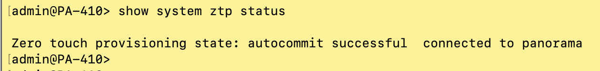
show cloud-management-statusYour screen should look like this:
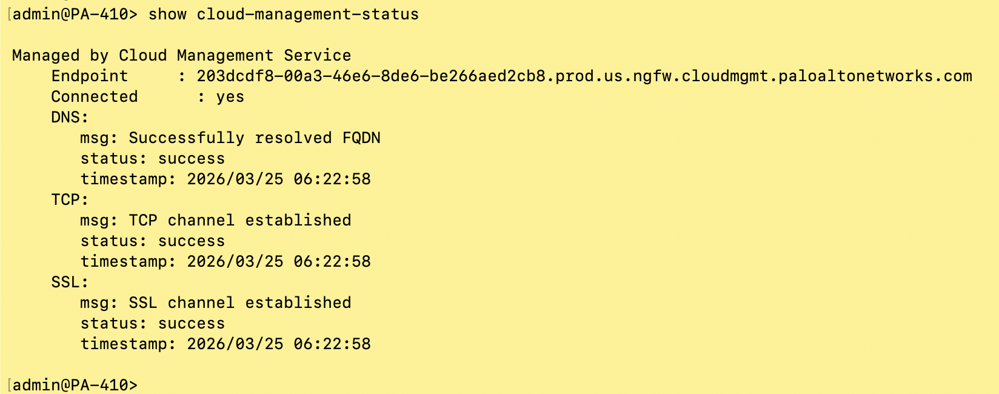
show jobs allRun just before the advanced routing reboot , your screen should look like this:
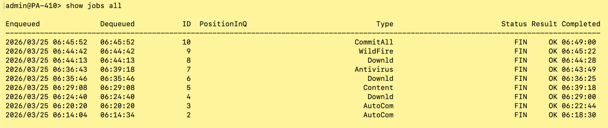
Monitor via SCM
- Navigate to Settings > Device Management.
Your screen should look like this:
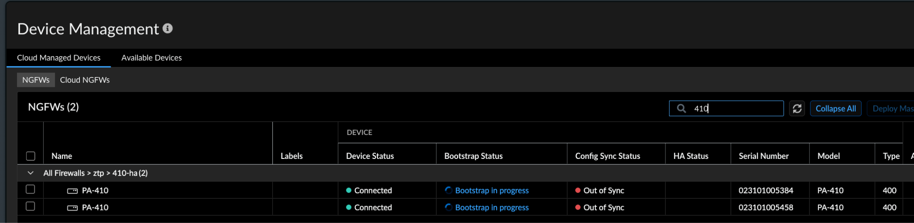
- Click the Bootstrap in Progress link to follow the onboarding detail.
Your screen should look like this:
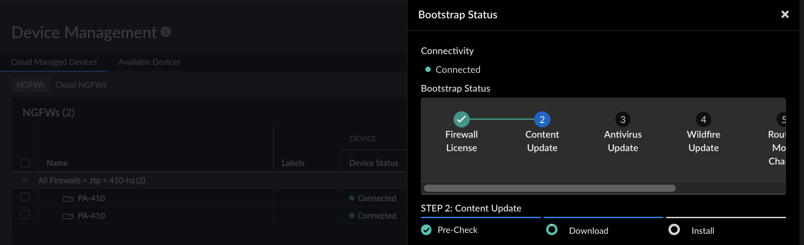
Post-bootstrap state
After bootstrap completes, both devices will show in SCM. At this point the configuration is not yet in sync. The management interface does not yet have a DHCP address from SCM's perspective, and the dataplane configuration is still using the ZTP snippet (routing via loopback.900 through eth1/1). Phase 4 corrects this.
Bootstrap complete state , your screen should look like this:
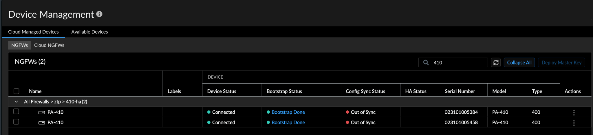
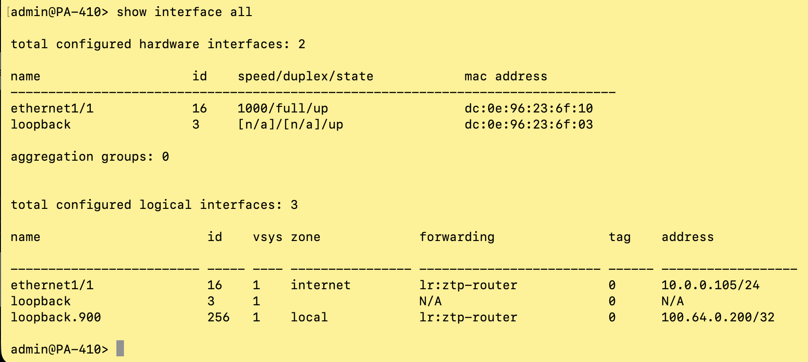
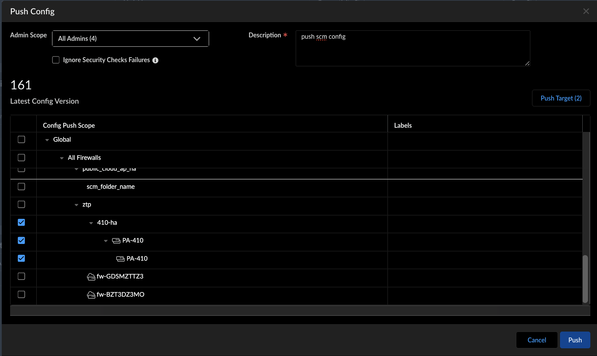
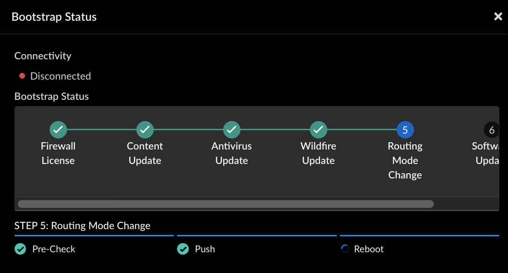
Both PA-410 serial numbers appear in Settings > Device Management > Cloud Managed Devices. The devices show a model, serial number, and connection to SCM. Config out-of-sync is expected at this stage.
Phase 4: Management Interface and HA Prep
Phase 4 applies to both the single-firewall and HA pair paths. The ZTP process uses loopback.900 for service routes regardless of how many firewalls are deployed. References to "both firewalls" in this phase mean "the single PA-410" for the single-firewall path. Phase 5 (HA wizard) is skipped for the single-firewall path , proceed to Phase 6 after completing Step 4.6.
The ZTP process leaves the firewall(s) reachable via SCM but using a temporary routing path through the WAN dataplane interface (eth1/1 via loopback.900). This phase moves SCM connectivity to the dedicated management interface. For HA deployments, this is critical: the passive unit must maintain its own independent SCM connection so it can receive config pushes regardless of which unit holds the active dataplane role.
Management was connected to the provider switch for ZTP. Once this phase is complete and the management interface has a confirmed DHCP address from the provider switch, you can optionally re-cable management to the LAN switch for a more secure long-term posture. Steps:
- Physically move the management Ethernet cable from the provider switch port to a port on the branch LAN switch (on a dedicated management VLAN if available).
- On each firewall, update the management interface configuration: add a static default route on the management interface pointing to the LAN switch's default gateway IP. This tells PAN-OS how to reach the internet via the LAN-side path for management traffic.
- Confirm SCM remains connected after the cable move using
show cloud-management-status.
This step is optional for a demo/POC. In production, it is recommended. Management on the LAN side is not directly internet-adjacent and is behind your existing LAN security controls. The CG-NAT on the provider switch provides initial protection, but the LAN placement is the right long-term posture.
By default, firewalls display their serial number as the device name in SCM. Rename them before proceeding to make subsequent steps easier to track.
- Navigate to Settings > Folder Management.
- Locate the first PA-410 (shown by serial number).
- Click the vertical triple-dot menu in the Action column and select Edit.
- Enter a meaningful Display Name (for example:
branch-fw-primaryandbranch-fw-secondary). - Click Save.
- Repeat for the second device.
Your screen should look like this:
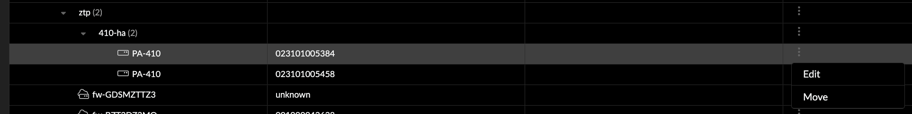
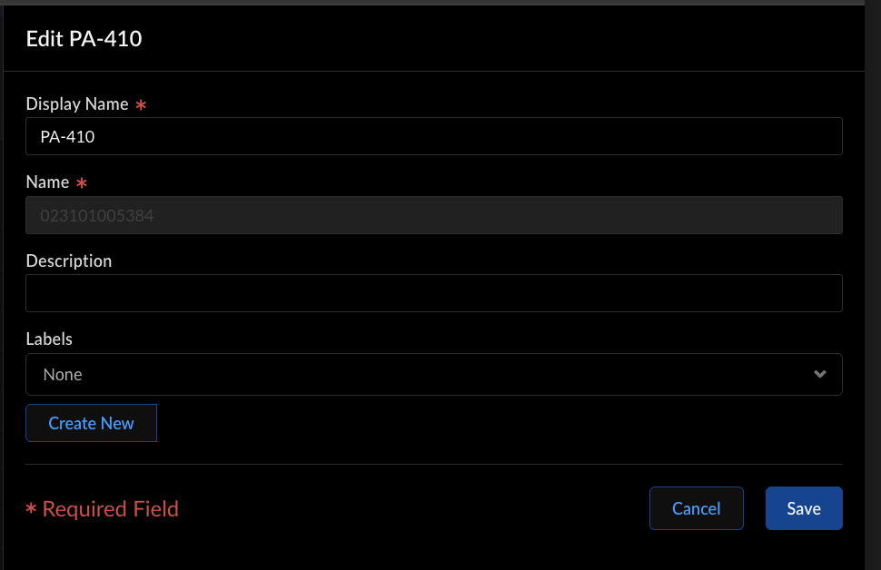
Both devices now display their friendly names instead of serial numbers in Folder Management.
Remove the ZTP-Default snippet from the 410-ha folder and configure the management interface for DHCP. Service routes stay on loopback.900 for now , they move to management in Step 4.4.
Remove the ZTP snippet
- In SCM, navigate to Configuration > NGFW and Prisma Access > Setup.
- Set the configuration scope to 410-ha using the folder selector in the top-left of the Configuration area.
- Click Snippets. Locate
ZTP-Defaultin the associated snippets list. - Click the remove / unlink icon next to
ZTP-Defaultand confirm. The snippet should no longer appear in the410-hascope (it remains on the parentztpfolder — remove it there too if it appears inherited).
Configure the management interface for DHCP
- With the scope still set to 410-ha, navigate to Device > Setup > Interfaces > Management.
- Set IP Address Type to DHCP Client.
- Click Save.
- Leave service routes pointing to
loopback.900— do not change them here. Step 4.4 handles service route migration.
Your screen should look like this:
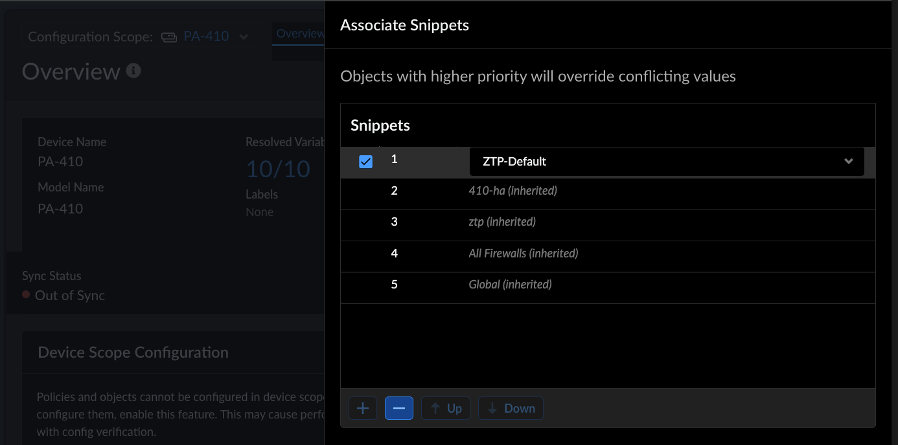
ZTP-Default no longer appears in the 410-ha folder snippet list. The management interface shows DHCP Client as the IP address type. No service route changes yet.
Push the updated configuration from SCM to both firewalls. After the push, verify that the management interface on each firewall has received a DHCP address from the provider switch.
- In SCM, click Push Config.
- Select both branch firewalls as targets.
- Confirm and wait for the push to complete.
Push status shows success for both firewalls. From the CLI on each firewall, run:
show interface management | match IpConfirm the management IP is a DHCP address from the provider switch, not the same as the eth1/1 dataplane address.
This is the most critical step in Phase 4. Moving SCM connectivity from the ZTP dataplane path (loopback.900 via eth1/1) to the dedicated management interface ensures the passive HA unit maintains its own independent SCM session. Without this, the passive unit's SCM connectivity depends on the active unit's dataplane , breaking config sync and management visibility.
- In SCM, navigate to Configuration > NGFW and Prisma Access > Setup.
- Set the scope to 410-ha.
- Click Services > Service Route Configuration.
- For each of the following services, change the Source Interface from
loopback.900to Management:
panorama(SCM connectivity — most important)dnsntppaloalto-networks-services
Push this service route change before rebooting. If you reboot without pushing, the firewalls will come back up still using loopback.900 and the management interface will not be the SCM path.
- Push the configuration change from SCM.
- Verify the push completes successfully for both firewalls.
Config push succeeds. From the CLI, confirm SCM connectivity is now via the management interface:
show netstat all yes numeric-ports yes numeric-hosts yes | match :3978The source IP in the output should be the management interface IP, not the eth1/1 IP.
Reboot both firewalls from SCM to apply the service route changes cleanly.
- Navigate to Settings > Device Management.
- For each firewall, click the vertical triple-dot menu on the right and select Reboot.
- Confirm the reboot.
- Wait for both firewalls to come back online.
Both firewalls reconnect to SCM via their management interfaces. Confirm using the CLI on each device:
show interface management | match Ipshow cloud-management-statusThe management IP must be different from the eth1/1 dataplane IP. SCM status shows Connected: Yes.
Before forming the HA pair, confirm both firewalls are fully connected and config-synchronized in SCM.
Your screen should look like this:
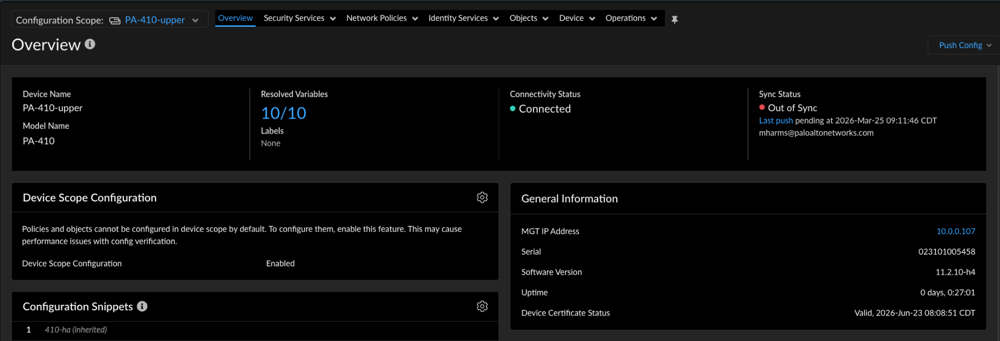
In Settings > Device Management > Cloud Managed Devices, both firewalls show their model, serial number, management IP address, and a config-in-sync status. Both must be connected before proceeding to Phase 5.
Phase 5: Build HA Pair
Phase 5 configures the Active/Passive HA pair using the SCM HA wizard. The single-firewall path has no HA partner to configure. Proceed directly to Phase 6: SD-WAN AutoVPN.
Use the SCM HA wizard to configure the Active/Passive pair. The wizard has 5 steps: General settings, device selection, HA1 (control link), HA2 (data link), and failure conditions. HA1 runs on ethernet1/2 and HA2 on ethernet1/3 using dedicated IP addresses from the SCM variable set defined in Phase 2.
Before launching the wizard, confirm the folder overview shows both branch firewalls connected and the HA Setup counter at 0 (not yet configured).
- In SCM, set the configuration scope to 410-ha.
- Click Overview. Confirm: Firewalls = 2, Connectivity Status = Connected (2), HA Setup = 0.
Confirm pre-HA state , your screen should look like this:
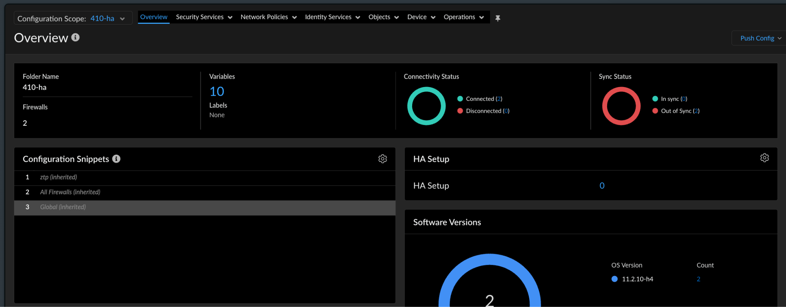
- Navigate to HA Setup (gear icon or left navigation).
- Click Add HA Setup to open the Create HA wizard.
The Create HA wizard opens showing 5 steps across the top: General, Select Devices, Control Link Settings, Data Link Settings, Failure Condition Settings.
Configure the overall HA mode and active/passive behavior.
| Setting | Value | Notes |
|---|---|---|
| HA Mode | Active - Passive | Only one firewall forwards traffic at a time. |
| Config Sync | Enable (checked) | Keeps both firewalls in identical configuration state. |
| Group ID | 1 | Must match on both peers. Leave at default. |
| SSH HA Profile | None | Leave as None unless PKI authentication is required. |
| Passive Link State | Auto | Auto (not Shutdown) keeps passive NIC links up and negotiating LACP, enabling sub-2-second failover. Shutdown would require link re-negotiation on failover. |
| Monitor Fail Hold Down Time | 1 min | How long to remain non-functional after a link/path monitor failure before failing over. |
Your screen should look like this:
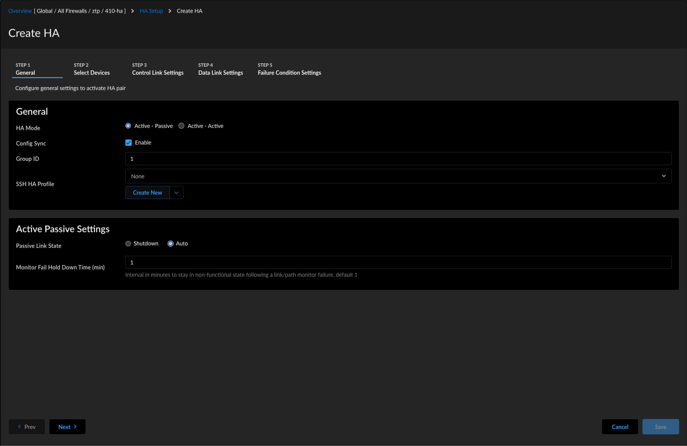
Active - Passive is selected. Passive Link State is set to Auto (not Shutdown). Click Next.
Select the two PA-410s and configure device priority and failover election behavior.
- In the Select Primary Device panel, click PA-410-upper.
- In the Select Secondary Device panel, click PA-410-lower.
"Primary" in this wizard means the device with higher election priority , it is the preferred active unit. The actual active/passive state at runtime depends on which device wins the election. With preemptive disabled, whichever unit boots first becomes active and holds that role until it fails.
Configure Election Settings:
| Setting | Value | Notes |
|---|---|---|
| Device Priority — Primary | 1 | Lower number = preferred active device. |
| Device Priority — Secondary | 2 | Higher number = standby preference. |
| Preemptive | Disabled | Leave unchecked. Preemptive causes the primary to retake active state after recovering — not recommended as it causes unnecessary traffic interruption. |
| Heartbeat Backup | Disabled | Leave unchecked unless you have a separate heartbeat backup path. |
| HA Timer Settings | Recommended | Use Recommended timers for standard branch deployments. |
Your screen should look like this:
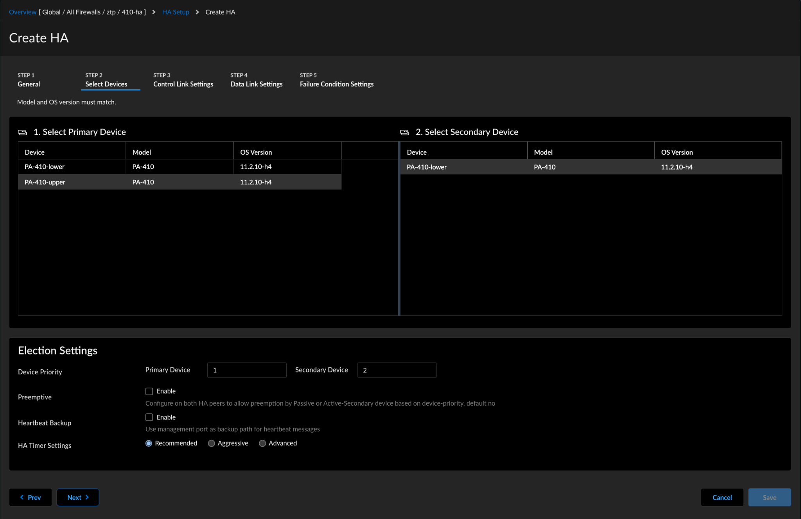
Both PA-410 devices appear in the wizard. Model and OS version match (PA-410, 11.2.10-h4). Priority 1 is assigned to the primary, priority 2 to the secondary. Preemptive is disabled. Click Next.
HA1 is the control link , it carries heartbeats, HA state information, routing management plane data, and configuration synchronization. Configure it on ethernet1/2 for both devices using the SCM variables defined in Phase 2.
| Setting | Primary (PA-410-upper) | Secondary (PA-410-lower) |
|---|---|---|
| Port | ethernet1/2 | ethernet1/2 |
| IPv4/IPv6 Address | $ha1-pri-ip (172.16.254.11) | $ha1-sec-ip (172.16.254.12) |
| Netmask | $ha1-mask (255.255.255.0) | $ha1-mask (255.255.255.0) |
| Gateway | None | None |
| HA1 Backup | None (optional) | None (optional) |
| Monitor Hold Time | 3000 ms (common setting) | |
Your screen should look like this:
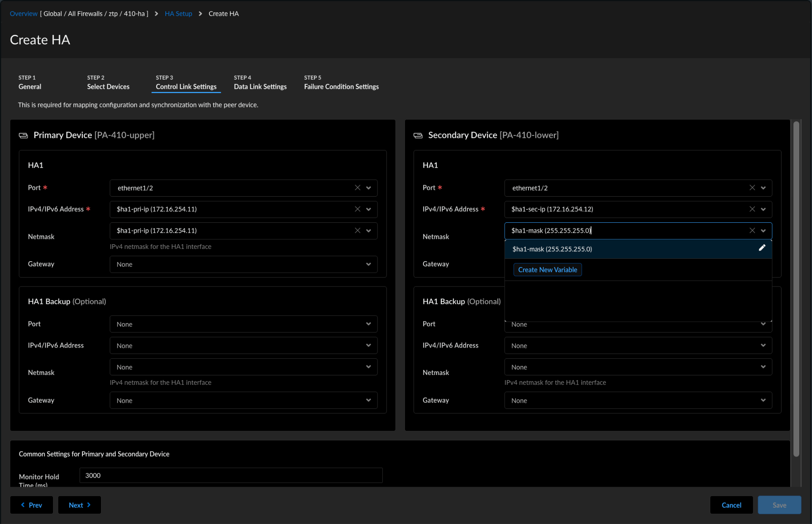
HA1 is set to ethernet1/2 on both devices. The SCM variable names resolve to the correct IPs (172.16.254.11 for primary, 172.16.254.12 for secondary) in the same /24 subnet. Click Next.
HA2 is the data link , it synchronizes sessions, forwarding tables, IPSec SAs, and ARP tables. Configure it on ethernet1/3 using the HA2 SCM variables.
| Setting | Primary (PA-410-upper) | Secondary (PA-410-lower) |
|---|---|---|
| Port | ethernet1/3 | ethernet1/3 |
| IPv4/IPv6 Address | $ha2-pri-ip (172.16.255.11) | $ha2-sec-ip (172.16.255.12) |
| Netmask | $ha2-mask (255.255.255.0) | $ha2-mask (255.255.255.0) |
| HA2 Backup | None | None |
| Enable Session Synchronization | Checked | |
| Transport | Layer4 transport via UDP/29281 | |
| HA2 Keep-alive | Disabled (unchecked) | |
Your screen should look like this:
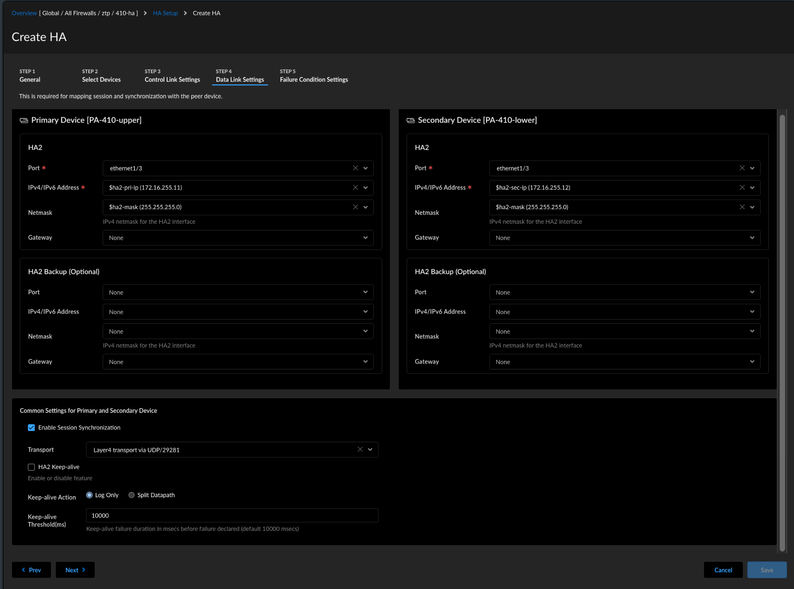
HA2 is set to ethernet1/3 on both devices. IPs are in the 172.16.255.x/24 subnet (separate from HA1). Session synchronization is enabled. Click Next.
The final wizard step configures link monitoring and path monitoring failure conditions. In this deployment both are left disabled , failover is triggered by heartbeat loss and HA timer expiry only, not by link or path monitor.
Your screen should look like this , Link Monitoring and Path Monitoring both disabled:
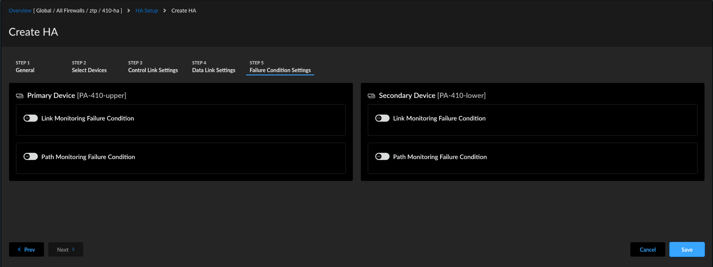
- Leave both Link Monitoring Failure Condition and Path Monitoring Failure Condition disabled.
- Click Save.
SCM returns to the HA Setup list. Push the HA configuration to both branch firewalls.
The HA Setup list confirms the pair , PA-410-lower as Active, PA-410-upper as Passive:
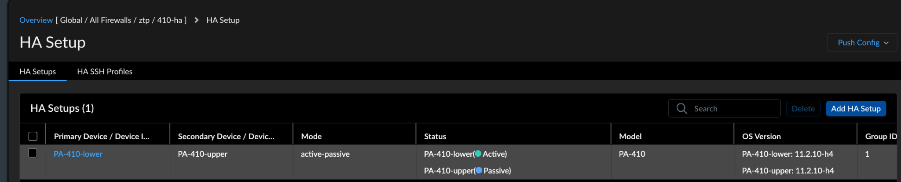
The HA Setup list shows one entry with Mode active-passive, Group ID 1. Status shows one device as Active and one as Passive. Both are running PAN-OS 11.2.10-h4.
It is normal for PA-410-lower (priority 2, secondary) to appear as Active if it booted first. Because Preemptive is disabled, the first-to-boot unit wins the election and holds the active role until it fails , regardless of device priority. This is expected behavior and does not need correction. Push the configuration before proceeding to Phase 6.
Phase 6: SD-WAN AutoVPN — Hub Verification and Branch Join
Phase 6 has two parts: first verify the hub is ready to accept branch connections, then add the branch HA pair to the VPN cluster. The hub side was configured in Phase 1B; this phase confirms it is operational and performs the branch join.
Before adding the branch, confirm the hub SD-WAN configuration is fully applied and the hub VMs are ready to terminate IPSec tunnels from branch firewalls.
- In SCM, navigate to the SD-WAN plugin and confirm both hub devices (both named site
hub1) show as Configured under the VPN cluster. - Confirm the VPN cluster exists and both hub devices are members.
- From the active hub firewall (fw-1) CLI, confirm AutoVPN has configured the expected constructs:
# Verify SD-WAN VIFs were created by AutoVPN
show sdwan vif all
# Verify loopback.901 exists in zone-internal (BGP router-ID)
show interface logical | match loopback
# Verify BGP is configured (will show no peers yet — branch not added)
show routing protocol bgp summaryFrom the Terraform output ha_floating_untrust_ip, identify the Public IP address of sdwan-hub-pip. This is the address branch firewalls will use as their hub WAN peer. Confirm it is reachable from the internet (UDP 500 and UDP 4500 inbound) by checking the untrust NSG in the Azure portal , the allow-sdwan-ipsec-inbound rule should be present and enabled.
The SD-WAN DIA VIF and loopback.901 exist on the active hub firewall. BGP is configured. The hub untrust NSG allows UDP 500 and UDP 4500 inbound. The sdwan-hub-pip Public IP is noted and reachable.
The SD-WAN plugin requires each firewall in an HA pair to be added separately to the VPN cluster using identical site settings. Both devices receive the same hub failover priority. The passive device takes on the active device's characteristics at failover , the SD-WAN plugin only generates configuration for reaching the active device's parameters. For A/P HA branch pairs, use the same site name for both devices (matching the hub pattern used in Step 1B.5).
Navigate to the VPN cluster created in Phase 1B and add the branch device(s) under the Branch devices tab.
Add the single PA-410 as one branch device entry:
| Setting | Value | Notes |
|---|---|---|
| Site Name | branch1 | Unique branch site name. |
| Router | default | Default logical router. |
| BGP Redistribution Profile | All-Connected-Routes | Advertises branch LAN prefixes to hub via eBGP. |
| Ethernet Interface | $eth-internet | Resolves to ethernet1/1 — SD-WAN WAN interface. |
| Next Hop Gateway | None | DHCP default gateway used automatically by DIA VIF. |
| SD-WAN Interface Profile | SDWAN-DIA1 | Ethernet-type public profile. |
| Upstream NAT | Disabled | Dynamic peer discovery handles CG-NAT tunnel establishment. |
One click , one device. The VPN cluster Branch devices tab will show one entry when complete.
Add both PA-410s separately using identical settings. Both devices use the same site name , the SD-WAN plugin targets the active device's IP and the passive inherits it on failover.
| Setting | Value | Notes |
|---|---|---|
| Site Name | branch1 | Same for both PA-410-lower and PA-410-upper. |
| Router | default | Default logical router. |
| BGP Redistribution Profile | All-Connected-Routes | Advertises branch LAN prefixes to hub via eBGP. |
| Ethernet Interface | $eth-internet | Resolves to ethernet1/1 on both devices. |
| Next Hop Gateway | None | DHCP default gateway — leave empty. |
| SD-WAN Interface Profile | SDWAN-DIA1 | Ethernet-type public profile. |
| Upstream NAT | Disabled | Dynamic peer discovery handles CG-NAT. |
Add PA-410-lower first, then click Add Branch devices again and add PA-410-upper with the same settings.
Branch Settings for PA-410-lower , your screen should look like this:
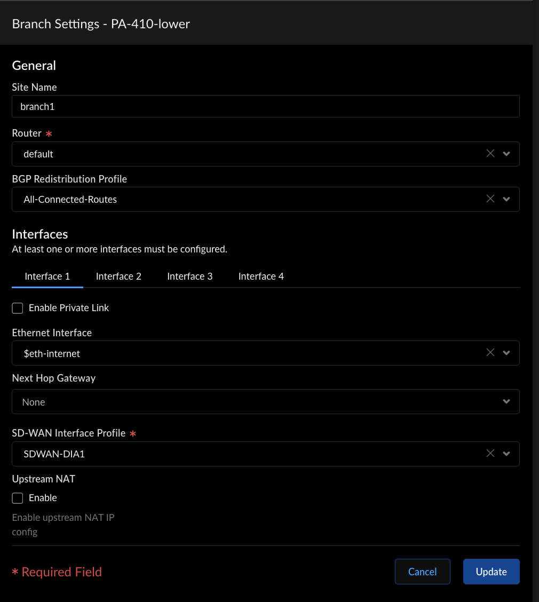
Branch devices tab after adding both HA devices (HA Pair path) , both show site name branch1:
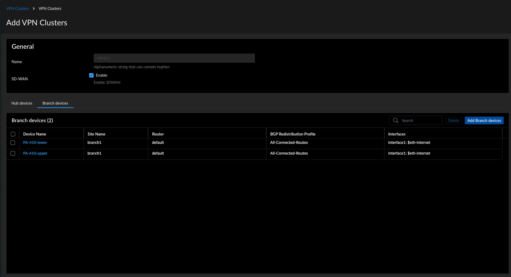
Single Firewall: Branch devices tab shows one entry , site name branch1, router default, interface $eth-internet.
HA Pair: Branch devices tab shows two entries , both named branch1, identical settings. Push to both branch and hub firewalls before proceeding.
After pushing, AutoVPN creates the following constructs on both branch firewalls. Verify these exist after the push completes.
- Security zones:
zone-internal,zone-to-hub,zone-public,zone-private(created if not already present) - Loopback
loopback.901inzone-internal(BGP router-ID interface) - IPSec tunnels from branch
ethernet1/1to each hub WAN interface (one tunnel per active hub) - DIA VIF grouping
ethernet1/1for direct internet access path selection - VPN VIF grouping the IPSec tunnels to the hub
- eBGP sessions over each tunnel to the hub, advertising branch LAN prefixes (via
All-Connected-Routesredistribution) - Static default route pointing to the DIA VIF
Both branch firewalls are in the VPN cluster. Push to both branch and hub firewalls. After push, confirm from the branch CLI that SD-WAN VIFs exist and BGP is configured. Proceed to Phase 7 to verify tunnel formation.
The AutoVPN process creates zones and routing, but security policies must permit the traffic. Verify the following policies exist in the branch folder configuration in SCM. Create any that are missing.
| Policy | Source zone | Destination zone | Application | Action |
|---|---|---|---|---|
| BGP to hub | zone-internal | zone-to-hub | bgp | Allow |
| Branch LAN to hub | zone-private | zone-to-hub | any (or specific) | Allow |
| Hub to branch LAN | zone-to-hub | zone-private | any (or specific) | Allow |
| DIA outbound | zone-private | zone-public | any (or specific) | Allow |
Insert the BGP permit rule near the top of the security policy rulebase. BGP is a control-plane function , blocking it prevents tunnel formation and route exchange even if the IPSec tunnel is up.
DIA NAT policy
For direct internet access from the branch LAN, create a Dynamic IP and Port (DIPP) NAT rule per WAN interface:
| Rule name | Source zone | Destination zone | Destination interface | Translation |
|---|---|---|---|---|
DIA-NAT-eth1_1 | zone-private | zone-public | ethernet1/1 | Dynamic IP and Port — interface address of eth1/1 |
All required security policies are present in the branch folder configuration. The BGP policy is at or near the top of the rulebase. The DIA NAT policy covers each WAN interface.
Push the full SD-WAN configuration to both branch firewalls and to the hub firewalls (the hub needs updated peer configuration to include the new branch tunnels).
- In SCM, click Push Config.
- Target: both branch firewalls and the hub firewalls.
- Confirm and wait for the push to complete.
The hub firewalls receive new IPSec peer configuration for the branch. Pushing only the branch leaves the tunnels half-configured and they will not come up.
Push status shows success for both branch firewalls and hub firewalls. Proceed to Phase 7 to verify tunnel formation and traffic flow.
Troubleshooting
The five most common failure modes, in order of likelihood. Check these before opening a support case.
If both firewalls are powered on and connected to the provider switch but do not appear in SCM after 30–45 minutes, work through this checklist in order:
- Outbound port 3978 blocked. From a device on the provider switch network, confirm port 3978 outbound is reachable. Many ISPs and CG-NAT providers block non-standard ports. If blocked, configure PAN-OS to use port 443 instead (available in PAN-OS 11.2 and later).
- DHCP not provided on management port. The management interface must receive a DHCP address. Check the provider switch port assignments and DHCP scope.
- Onboarding rule mismatch. In SCM, navigate to Configuration > NGFW and Prisma Access > Setup > Device Onboarding and confirm the rule is enabled and matches the HA-Group label assigned in the ZTP portal.
- Devices not claimed in ZTP portal before boot. The ZTP portal registration must exist before the firewalls first reach the internet. If the devices booted without being registered, power them off, register them, then power back on.
On the firewall CLI (console access), check ZTP status:
show system ztp status
show cloud-management-status
show jobs allshow cloud-management-status shows Connected: Yes. show jobs all shows the Advanced Routing Engine job completed. Both devices appear in SCM Settings > Device Management > Cloud Managed Devices.
Symptom: SCM shows the passive firewall as Disconnected intermittently. Config sync fails. This means service routes were not moved to the management interface before HA was formed (Step 4.4 was skipped or the push failed).
Diagnosis , run on the passive firewall:
show netstat all yes numeric-ports yes numeric-hosts yes | match :3978If the source IP in the output is eth1/1's address (not the management IP), service routes are still using the dataplane path. Break HA, return to Phase 4, complete Steps 4.4–4.5, then re-run Phase 5.
Symptom: After the Phase 5 push, show ha all shows HA1 link state as down and peer state as unknown.
Check the physical link first:
show interface ethernet1/2- If link state is down: wrong cable or wrong port. Confirm the crosslink is
eth1/2↔eth1/2(noteth1/2↔eth1/3). - If link state is up but no IP address: the wizard mapped the wrong interface. Return to Phase 5 and re-run the SCM HA wizard, selecting
ethernet1/2explicitly for HA1. - If link state is up and IP is correct: check that both HA peers are running the same PAN-OS version. Mismatched versions block HA formation.
Symptom: show vpn ipsec-sa shows tunnels active, but show routing protocol bgp peer shows state Idle or Active (not Established).
Most common causes:
- Missing BGP security policy. In SCM, confirm a security policy exists that permits
bgpfromzone-internaltozone-to-huband the reverse. Insert it near the top of the rulebase and push. - BGP AS number conflict. Each SD-WAN site must have a unique BGP AS number. If two sites share an AS, BGP will not form. Check the VPN cluster configuration in SCM for duplicate AS numbers.
- Hub not pushed after branch was added to VPN cluster. The hub firewall must receive updated peer configuration when a new branch is added. Re-push to both hub and branch and confirm both pushes succeed.
Symptom: After request high-availability state suspend on fw-1, fw-2 becomes active but the SD-WAN hub tunnels do not recover. Branch firewalls cannot re-establish tunnels.
Check the Azure role assignment , this is the most common cause:
az role assignment list \
--resource-group CUSTOMER_RG_NAME \
--query "[?roleDefinitionName=='Network Contributor'].{principal:principalName}" \
--output tableIf fw-2's Managed Identity does not appear in the output, the role assignment failed during Terraform apply. Re-run terraform apply , it is idempotent and will add the missing assignment. Then test failover again.
If the role assignment is present but the IP still doesn't move, check the system log on fw-2 for Azure API error messages:
show log system | match "azure\|HA\|floating"Phase 7: Verification
Confirm end-to-end operational state: configuration synchronization, VPN tunnel formation, EBGP route exchange, and live traffic flow from branch to hub.
In SCM Device Management, confirm both branch PA-410s are Connected, Bootstrap Done, In Sync, and showing correct HA state (one Active, one Passive).
Your screen should look like this , both devices in folder All Firewalls > ztp > 410-ha, Connected, Bootstrap Done, In Sync, with HA state visible:
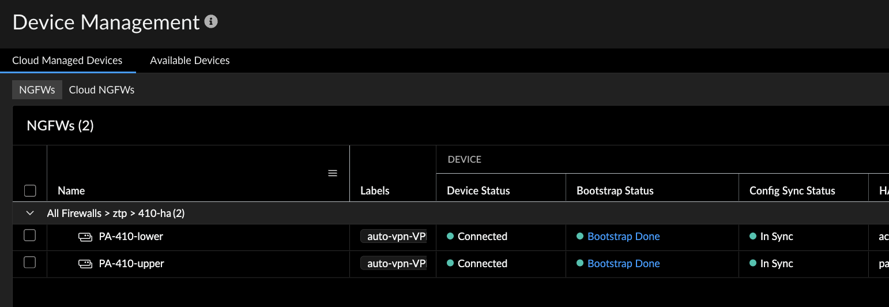
ztp > 410-ha with two devices: PA-410-lower (label auto-vpn-VP, Connected, Bootstrap Done, In Sync, HA=active) and PA-410-upper (label auto-vpn-VP, Connected, Bootstrap Done, In Sync, HA=passive)" loading="lazy">Both branch firewalls show Connected, Bootstrap Done, In Sync. One shows HA state active (PA-410-lower), the other passive (PA-410-upper). Labels show auto-vpn-VP... , this confirms AutoVPN has applied the SD-WAN label to both devices after Phase 6 completed.
Verify that the IKEv2/IPsec tunnels have formed between the branch and hub, and that EBGP peering is established and exchanging routes in both directions.
From the branch firewall CLI, check tunnel and BGP status:
show vpn ike-sa
show vpn ipsec-sa
show routing protocol bgp peerYour screen should look like this:
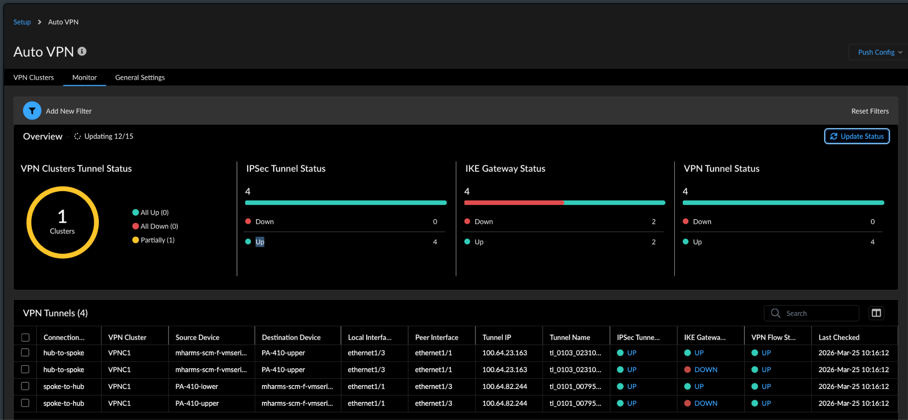
IKEv2 Phase 1 (IKE SA) and Phase 2 (IPsec SA) are both active. EBGP session between branch and hub shows state Established. Branch routing table contains hub prefixes learned via eBGP; hub routing table contains the branch LAN prefix (eth1/7 subnet). In the SCM SD-WAN monitoring dashboard, the branch site shows path health (latency/jitter/loss metrics) , this confirms path-monitoring probes are flowing through the tunnels.
Pass live traffic from a branch client through the HA pair, over the SD-WAN VPN, to a host on the hub side. This confirms the complete data path is operational.
Connectivity test sequence , your screens should look like this:
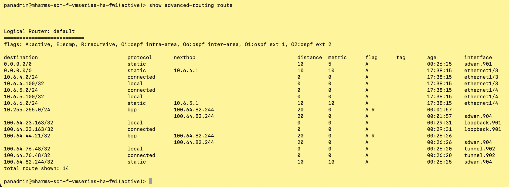
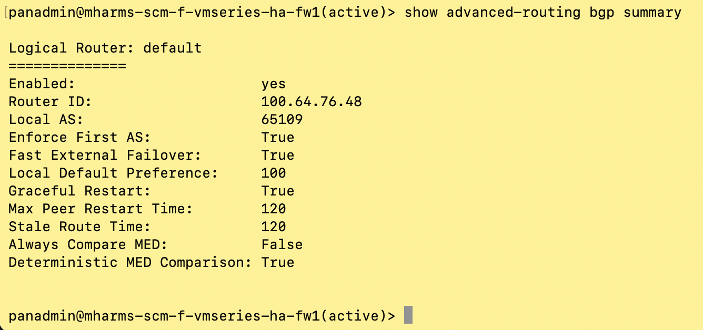
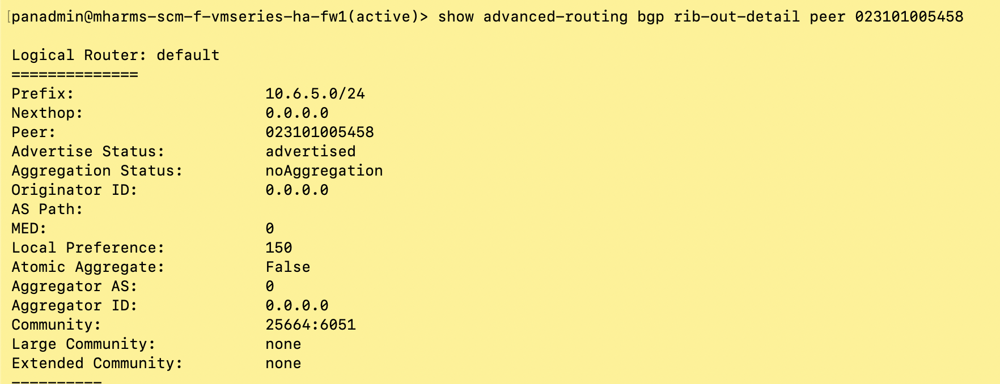
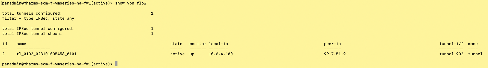
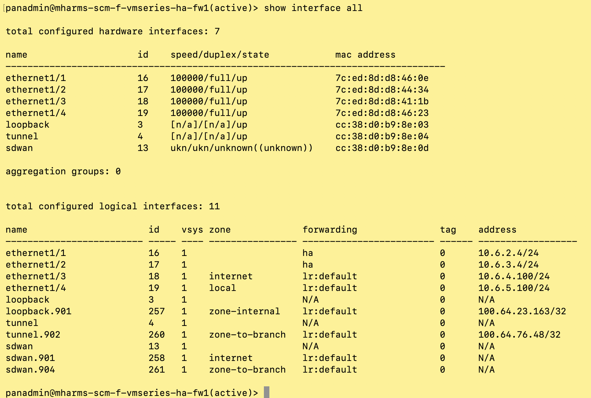
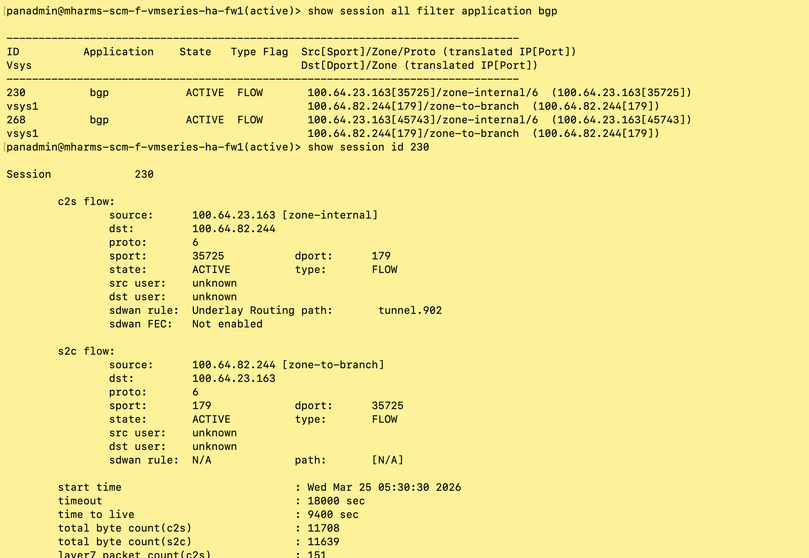
Traffic from a branch LAN client successfully reaches a destination on the hub network over the SD-WAN AutoVPN. Sessions appear in the firewall monitor on both the branch and hub. The branch HA pair is Active/Passive with the primary firewall handling traffic. The passive firewall maintains its independent SCM connection and config sync.
Confirm the hub A/P HA pair is healthy and the Managed Identity role assignment is in place so Azure API-based failover will work when needed.
Verify HA state from hub CLI
# On fw-1 (active) — expect: state: active, peer state: passive
show ha state
# On fw-2 (passive) — expect: state: passive, peer state: active
show ha state
# Confirm config is synchronized between the pair
show ha all | match syncVerify Managed Identity role assignment in Azure
# Verify both VMs have their Managed Identity granted Network Contributor
# Replace with your resource group (e.g., example-vmseries-ha-hub)
az role assignment list \
--resource-group \
--query "[?roleDefinitionName=='Network Contributor'].{principal:principalName, role:roleDefinitionName}" \
--output table Both VM-Series principal IDs should appear in the output with Network Contributor. If either is missing, re-run terraform apply , the role assignment may have failed silently on first apply.
fw-1 shows active, fw-2 shows passive. Both show peer state as connected and config synchronized. The Azure CLI output shows two Network Contributor role assignments on the resource group , one per hub firewall Managed Identity.
Trigger a controlled hub failover to confirm the Azure API-based IP migration works and that branch SD-WAN tunnels recover automatically. Do this test before going live , it is much better to discover configuration issues now than during an unplanned outage.
Hub failover in Azure takes 15 to 60 seconds. Branch SD-WAN tunnels will drop and re-establish during this window. Schedule the test during a maintenance window if traffic is flowing.
Initiate failover from fw-1 CLI
# Force fw-1 to become passive (fw-2 will assume active)
request high-availability state suspendMonitor failover on fw-2
# On fw-2 — watch it transition to active
show ha state
# Confirm fw-2 now owns the floating IPs
show interface ethernet1/1 | match "IP address"
show interface ethernet1/2 | match "IP address"
# Verify Azure API call succeeded (check system log for HA events)
show log system | match "HA\|azure\|floating"Verify from Azure CLI that floating IPs moved
# Check which NIC currently holds the floating untrust IP (10.0.1.6)
az network nic show \
--resource-group example-vmseries-ha-hub \
--name example-fw-2-untrust \
--query "ipConfigurations[].privateIPAddress" \
--output tsv
# Check which VM the sdwan-hub-pip Public IP is associated with
az network public-ip show \
--resource-group example-vmseries-ha-hub \
--name example-sdwan-hub-pip \
--query "ipConfiguration.id" \
--output tsvVerify SD-WAN tunnel recovery from branch
# On the branch active firewall — tunnels should re-establish after failover
show vpn ike-sa
show vpn ipsec-sa
show routing protocol bgp peerRestore fw-1 to active (failback)
# On fw-1 — restore it to functional state (it will return to passive initially
# since preemptive is disabled — this is expected)
request high-availability state functional
# If you need to force fw-1 back to active immediately:
# (Not recommended in production — let fw-2 stay active until next natural failback)
# request high-availability state suspend # run on fw-2After failover: fw-2 shows active. The Azure CLI confirms 10.0.1.6 is on fw-2's untrust NIC and sdwan-hub-pip is associated with fw-2's NIC. Branch IPSec tunnels and EBGP sessions re-establish to the same Public IP within 60 seconds. Branch-to-hub traffic resumes without reconfiguration on the branch. After failback: the system returns to fw-1 active / fw-2 passive.